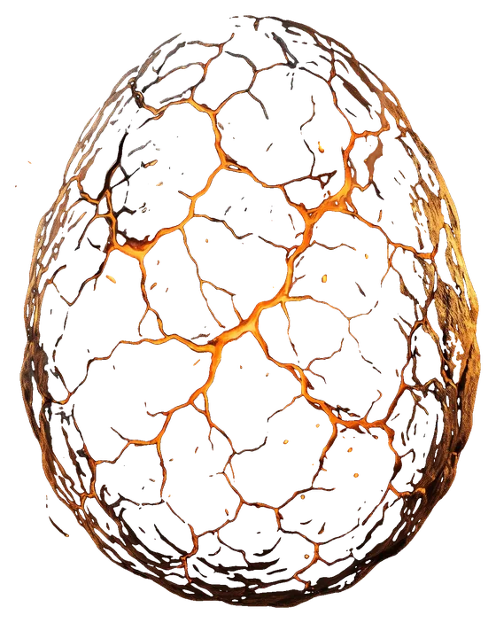

<!doctype html>
<html lang="en"><head>
<meta charset="utf-8">
<meta name="viewport" content="width=device-width,initial-scale=1,viewport-fit=cover">
<meta name="theme-color" content="#0b0a0e">
<title>Eternal Hoard – The Last Warmth</title>
<link rel="icon" href="../icon-192.png">
<link rel="apple-touch-icon" href="../apple-touch-icon.png">
<link rel="preconnect" href="https://fonts.googleapis.com"><link rel="preconnect" href="https://fonts.gstatic.com" crossorigin>
<link rel="stylesheet" href="https://fonts.googleapis.com/css2?family=Cinzel:wght@500;700;900&family=Spectral:ital,wght@0,400;0,500;0,600;1,400&display=swap">
<style>
:root{
  --void:#0b0a0e; --panel:#15121a; --panel-hi:#1f1a26; --line:#2d2533;
  --ember:#c1481f; --ember-hi:#e4682f; --gold:#c9a227; --gold-hi:#f0c44a;
  --frost:#a6d4ee; --frost-dim:#5b7d92; --ice:#dff1ff;
  --parch:#ece3d3; --dim:#a89e8c; --faint:#6b6270;
  --hp:#c43a3a; --heat:#f08a3a; --hope:#f0c44a; --dread:#9a5bd0; --wild:#5fbf7a;
  --f-d:'Cinzel',Georgia,serif; --f-b:'Spectral',Georgia,serif;
  color-scheme:dark;
}
*{box-sizing:border-box;-webkit-tap-highlight-color:transparent}
html,body{margin:0;background:var(--void);color:var(--parch);font-family:var(--f-b);font-size:17px;line-height:1.55}
body{min-height:100vh;background:radial-gradient(120% 60% at 50% 0%,#14202a 0%,transparent 60%),var(--void)}
button{font:inherit;color:inherit;cursor:pointer}
#app{max-width:560px;margin:0 auto;min-height:100vh;padding:0 max(14px,env(safe-area-inset-left)) calc(24px + env(safe-area-inset-bottom)) max(14px,env(safe-area-inset-right))}
h1,h2,h3{font-family:var(--f-d);margin:0;letter-spacing:.02em}
.ic{width:1em;height:1em;vertical-align:-.15em;fill:none;stroke:currentColor;stroke-width:2;stroke-linecap:round;stroke-linejoin:round}

/* top bar */
.bar{position:sticky;top:0;z-index:20;margin:0 calc(-1 * max(14px,env(safe-area-inset-left)));padding:calc(8px + env(safe-area-inset-top)) max(14px,env(safe-area-inset-left)) 8px;background:rgba(11,10,14,.9);backdrop-filter:blur(8px);-webkit-backdrop-filter:blur(8px);border-bottom:1px solid var(--line);display:grid;gap:6px}
.bar-top{display:flex;align-items:center;gap:10px;justify-content:space-between}
.bar-name{font-family:var(--f-d);font-weight:700;color:var(--gold-hi);font-size:15px;white-space:nowrap;overflow:hidden;text-overflow:ellipsis}
.bar-season{font-family:var(--f-d);font-size:11px;letter-spacing:.14em;text-transform:uppercase;color:var(--frost);display:flex;align-items:center;gap:8px;white-space:nowrap}
.pips{display:inline-flex;gap:3px}
.pips i{width:8px;height:12px;border-radius:50% 50% 45% 45%;background:var(--line)}
.pips i.on{background:linear-gradient(180deg,#ffd27a,var(--ember-hi));box-shadow:0 0 6px rgba(228,104,47,.6)}
.bar-stats{display:flex;gap:12px;align-items:center;font-size:13px;color:var(--dim)}
.hpbar{flex:1;height:8px;border-radius:6px;background:#2a1517;overflow:hidden;position:relative;min-width:60px}
.hpbar i{position:absolute;inset:0 auto 0 0;background:linear-gradient(90deg,#8c2323,var(--hp));border-radius:6px;transition:width .4s}
.stat{display:inline-flex;align-items:center;gap:4px;white-space:nowrap;font-variant-numeric:tabular-nums}
.stat b{color:var(--parch);font-weight:600}
.stat.gold{color:var(--gold-hi)} .stat.glow{color:var(--ember-hi)}

/* generic */
.btn{display:flex;align-items:center;justify-content:center;gap:8px;width:100%;padding:13px 16px;border-radius:12px;border:1px solid var(--line);background:var(--panel);font-family:var(--f-d);font-size:14px;letter-spacing:.08em;text-transform:uppercase;transition:transform .12s,border-color .2s,background .2s}
.btn:active{transform:scale(.98)}
.btn:hover{border-color:#4a3d52}
.btn.primary{background:linear-gradient(180deg,#d4602a,#a33a16);border-color:#e4682f;color:#fff4e6}
.btn.frost{background:linear-gradient(180deg,#22394a,#16232e);border-color:#3e6a85;color:var(--ice)}
.btn.ghost{background:transparent}
.btn:disabled{opacity:.4;cursor:default;transform:none}
.row{display:flex;gap:10px}
.row > *{flex:1}
.stack{display:grid;gap:10px}
.muted{color:var(--dim)}
.small{font-size:14px}
.label{font-family:var(--f-d);font-size:11px;letter-spacing:.2em;text-transform:uppercase;color:var(--dim)}
.fade-in{animation:fin .45s ease both}
@keyframes fin{from{opacity:0;transform:translateY(8px)}to{opacity:1;transform:none}}

/* title */
.title{min-height:100vh;display:grid;align-content:center;gap:22px;text-align:center;padding-block:40px}
.title h1{font-weight:900;font-size:44px;line-height:1.02;background:linear-gradient(180deg,#ffe7a0,#c9a227 60%,#7d5a12);-webkit-background-clip:text;background-clip:text;color:transparent}
.title .sub{font-family:var(--f-d);letter-spacing:.32em;text-transform:uppercase;font-size:12px;color:var(--frost)}
.title .egg{width:160px;margin:0 auto;filter:drop-shadow(0 0 30px rgba(228,104,47,.45))}
.title .note{font-size:14px;color:var(--faint)}

/* scene */
.scene{display:grid;gap:16px;padding-top:14px}
.plate{position:relative;aspect-ratio:16/9;border-radius:16px;overflow:hidden;border:1px solid var(--line);background:var(--panel)}
.plate .bg{position:absolute;inset:0}
.plate img.bgimg{position:absolute;inset:0;width:100%;height:100%;object-fit:cover}
.plate::after{content:"";position:absolute;inset:0;background:linear-gradient(180deg,transparent 55%,rgba(11,10,14,.85))}
.plate .who{position:absolute;left:12px;bottom:10px;z-index:2;display:flex;align-items:flex-end;gap:10px}
.portrait{width:74px;height:74px;border-radius:50%;overflow:hidden;border:2px solid var(--gold);background:#1c1720;display:grid;place-items:center;font-family:var(--f-d);font-weight:900;font-size:26px;color:var(--gold-hi);box-shadow:0 6px 18px rgba(0,0,0,.6)}
.portrait img{width:100%;height:100%;object-fit:cover}
.who-name{font-family:var(--f-d);font-size:13px;letter-spacing:.08em;color:var(--parch);text-shadow:0 2px 6px #000;padding-bottom:6px}
.plate .place{position:absolute;right:12px;bottom:12px;z-index:2;font-family:var(--f-d);font-size:11px;letter-spacing:.2em;text-transform:uppercase;color:var(--frost);text-shadow:0 2px 6px #000}
.scene h2{font-size:22px;color:var(--gold-hi);text-wrap:balance}
.prose{display:grid;gap:12px}
.prose p{margin:0}
.prose p.say{padding-left:14px;border-left:2px solid var(--gold);font-style:italic;color:#f3e9d6}
.choices{display:grid;gap:10px;margin-top:4px}
.choice{display:grid;gap:3px;text-align:left;padding:13px 15px;border-radius:12px;border:1px solid var(--line);background:var(--panel);transition:border-color .2s,background .2s,transform .12s}
.choice:hover{border-color:#5b4a3a;background:var(--panel-hi)}
.choice:active{transform:scale(.99)}
.choice .t{font-weight:500}
.choice .h{font-size:13px;color:var(--dim);font-style:italic}
.choice.locked{opacity:.45;cursor:default}
.choice.fight{border-color:#6a2a1a}
.choice.fight .t::before{content:"⚔ ";color:var(--ember-hi)}
.fx{display:flex;flex-wrap:wrap;gap:6px}
.fx span{font-size:13px;padding:4px 9px;border-radius:999px;border:1px solid var(--line);background:var(--panel)}
.fx .up{color:#9ee0a8}.fx .down{color:#e48a8a}.fx .gold{color:var(--gold-hi)}.fx .glow{color:var(--ember-hi)}.fx .hope{color:var(--hope)}.fx .dread{color:#c79cf0}.fx .wild{color:var(--wild)}.fx .info{color:var(--frost)}

/* creation */
.create{display:grid;gap:16px;padding-top:14px}
.create .hero{position:sticky;top:0;z-index:5;margin:0 -14px;padding:6px 0 4px;background:linear-gradient(180deg,var(--void) 82%,transparent);display:flex;justify-content:center}
.create .hero img{width:auto!important;max-width:100%;height:min(34vh,300px)!important}
.opt-group{scroll-margin-top:min(36vh,316px)}
.create .hero img{width:100%;height:auto;display:block;filter:drop-shadow(0 16px 26px rgba(0,0,0,.6))}
.create .hero::before{content:"";position:absolute;inset:14% 10% 6%;background:radial-gradient(closest-side,rgba(228,104,47,.25),transparent);}
.opt-group{display:grid;gap:8px}
.opts{display:grid;grid-template-columns:repeat(4,minmax(0,1fr));gap:8px}
.opt{padding:10px 6px;border-radius:10px;border:1px solid var(--line);background:var(--panel);font-size:13px;text-align:center;line-height:1.25}
.opt.on{border-color:var(--gold);background:#2a2214;color:var(--gold-hi)}
.opt small{display:block;color:var(--faint);font-size:11px;margin-top:3px}
.opt.on small{color:#c9a96a}
.sw{width:22px;height:22px;border-radius:50%;margin:0 auto 4px;border:2px solid rgba(255,255,255,.15)}
.name-in{width:100%;padding:14px 16px;border-radius:12px;border:1px solid var(--line);background:var(--panel);color:var(--parch);font:inherit;font-family:var(--f-d);font-size:18px;text-align:center;outline:none}
.name-in:focus{border-color:var(--gold)}
.presets{display:flex;flex-wrap:wrap;gap:6px;justify-content:center}
.presets button{font-size:13px;padding:6px 10px;border-radius:999px;border:1px solid var(--line);background:var(--panel)}
.kit{display:grid;grid-template-columns:repeat(2,minmax(0,1fr));gap:8px}
.kit div{padding:10px 12px;border-radius:10px;background:var(--panel);border:1px solid var(--line);font-size:13px;color:var(--dim)}
.kit b{display:block;font-family:var(--f-d);font-size:12px;letter-spacing:.06em;color:var(--parch)}

/* map */
.mapview{display:grid;gap:12px;padding-top:12px}
.mapbox{position:relative;aspect-ratio:3/2;border-radius:16px;overflow:hidden;border:1px solid #2b3d4a;background:#0d1820;touch-action:manipulation}
.mapbox .base{position:absolute;inset:0;width:100%;height:100%}
.mapbox canvas{position:absolute;inset:0;width:100%;height:100%;pointer-events:none}
.pin{position:absolute;transform:translate(-50%,-50%);display:grid;justify-items:center;gap:2px;background:none;border:0;padding:4px;z-index:3}
.pin .dot{width:26px;height:26px;border-radius:50%;display:grid;place-items:center;background:rgba(13,24,32,.85);border:1.5px solid var(--frost);color:var(--ice);font-size:13px;box-shadow:0 0 0 3px rgba(0,0,0,.35)}
.pin .nm{font-family:var(--f-d);font-size:10px;letter-spacing:.08em;color:var(--ice);text-shadow:0 1px 3px #000,0 0 6px #000;white-space:nowrap}
.pin.warm .dot{border-color:var(--ember-hi);background:rgba(60,26,12,.9);color:#ffd2a8}
.pin.lost .dot{border-color:#555;color:#777;background:rgba(20,20,24,.9)}
.pin.lost .nm{color:#888;text-decoration:line-through}
.pin.event .dot{animation:pulse 1.6s ease-in-out infinite}
.pin.sel .dot{transform:scale(1.18);border-width:2.5px}
.pin.locked{opacity:.55}
.pin.lair .dot{width:32px;height:32px;border-color:var(--ember-hi);background:radial-gradient(circle,#7a2e10,#2a120a);color:#ffcf8a}
@keyframes pulse{0%,100%{box-shadow:0 0 0 3px rgba(0,0,0,.35),0 0 0 0 rgba(240,196,74,.6)}50%{box-shadow:0 0 0 3px rgba(0,0,0,.35),0 0 0 7px rgba(240,196,74,0)}}
.pin .ex{position:absolute;top:-2px;right:0;width:12px;height:12px;border-radius:50%;background:var(--gold-hi);border:2px solid #0d1820}
.mapinfo{border:1px solid var(--line);border-radius:14px;background:var(--panel);padding:14px 16px;display:grid;gap:8px}
.mapinfo h3{font-size:17px;color:var(--parch);display:flex;justify-content:space-between;align-items:center;gap:8px}
.tag{font-family:var(--f-d);font-size:10px;letter-spacing:.14em;text-transform:uppercase;padding:3px 8px;border-radius:999px;border:1px solid var(--line);color:var(--dim);white-space:nowrap}
.tag.warm{color:#ffb27a;border-color:#6a3518}.tag.frozen{color:var(--frost);border-color:#2f4a5c}.tag.lost{color:#999}.tag.ally{color:#9ee0a8;border-color:#2c5a36}
.meters{display:grid;grid-template-columns:repeat(3,minmax(0,1fr));gap:8px}
.meter{border:1px solid var(--line);border-radius:12px;padding:8px 10px;background:var(--panel);display:grid;gap:5px}
.meter .label{font-size:10px}
.meter .mv{height:5px;border-radius:4px;background:var(--line);overflow:hidden}
.meter .mv i{display:block;height:100%;border-radius:4px}
.meter b{font-size:14px;font-variant-numeric:tabular-nums}
.hint{font-size:13px;color:var(--faint);text-align:center}

/* lair */
.lair{display:grid;gap:14px;padding-top:12px}
.hoardbox{display:grid;grid-template-columns:1fr 1fr;gap:10px}
.big{border:1px solid var(--line);border-radius:14px;background:var(--panel);padding:12px 14px}
.big .n{font-family:var(--f-d);font-size:26px;font-weight:700;font-variant-numeric:tabular-nums}
.big.g .n{color:var(--gold-hi)} .big.w .n{color:var(--ember-hi)}
.upg{display:grid;grid-template-columns:minmax(0,1fr) auto;gap:4px 12px;align-items:center;border:1px solid var(--line);border-radius:14px;background:var(--panel);padding:12px 14px}
.upg h4{margin:0;font-family:var(--f-d);font-size:15px}
.upg p{margin:0;grid-column:1;font-size:14px;color:var(--dim)}
.upg .buy{grid-row:1/3;grid-column:2;padding:10px 12px;border-radius:10px;border:1px solid #6a5420;background:#2a2214;color:var(--gold-hi);font-family:var(--f-d);font-size:13px;white-space:nowrap}
.upg .buy:disabled{opacity:.4}
.upg .lvl{font-size:12px;color:var(--faint)}

/* battle */
.battle{display:grid;gap:10px;padding-top:10px}
.arena{position:relative;aspect-ratio:5/4;border-radius:16px;overflow:hidden;border:1px solid var(--line);background:linear-gradient(180deg,#0f1922,#0a0f14)}
.arena img.bgimg{position:absolute;inset:0;width:100%;height:100%;object-fit:cover;opacity:.75}
.arena::after{content:"";position:absolute;inset:0;background:linear-gradient(180deg,rgba(0,0,0,.1),rgba(0,0,0,.55));pointer-events:none}
.me{position:absolute;left:-3%;bottom:8%;width:52%;z-index:2;transition:transform .2s}
.me img{width:100%;display:block;filter:drop-shadow(0 10px 18px rgba(0,0,0,.7))}
.foes{position:absolute;right:1%;top:12%;bottom:4%;width:47%;z-index:2;display:flex;flex-direction:column;justify-content:center;gap:4px}
.foe{position:relative;display:grid;grid-template-columns:minmax(0,1fr);justify-items:center;cursor:pointer;border-radius:12px;padding:4px;border:1px solid transparent;transition:transform .2s,opacity .4s}
.foe.tgt{border-color:rgba(240,196,74,.5);background:rgba(240,196,74,.06)}
.foe.dead{opacity:0;transform:scale(.8);pointer-events:none}
.foe .fig{width:100%;display:grid;place-items:center}
.foe .fig img,.foe .fig svg{max-width:100%;max-height:100%;display:block;filter:drop-shadow(0 8px 14px rgba(0,0,0,.7))}
.foes.n1 .fig{height:170px}.foes.n2 .fig{height:84px}.foes.n3 .fig{height:52px}
.foe .fname{font-family:var(--f-d);font-size:10px;letter-spacing:.06em;color:var(--parch);text-shadow:0 1px 3px #000}
.foe .fhp{width:90%;height:6px;border-radius:4px;background:#2a1517;overflow:hidden}
.foe .fhp i{display:block;height:100%;background:var(--hp);transition:width .35s}
.intent{position:absolute;top:0;left:0;font-size:12px;font-weight:600;padding:2px 7px;border-radius:999px;background:rgba(10,8,12,.85);border:1px solid var(--line);display:flex;gap:4px;align-items:center;font-variant-numeric:tabular-nums;z-index:3}
.intent.atk{color:#ff9a7a;border-color:#6a2a1a}.intent.def{color:var(--frost)}.intent.spc{color:#c79cf0}.intent.wind{color:#ffcf6a;border-color:#6a5420}
.chips{display:flex;flex-wrap:wrap;gap:3px;justify-content:center}
.chip{font-size:10px;padding:1px 6px;border-radius:999px;background:rgba(10,8,12,.8);border:1px solid var(--line);white-space:nowrap}
.chip.burn{color:#ff9a5a}.chip.poison{color:#9ee07a}.chip.chill,.chip.soak{color:var(--frost)}.chip.stun{color:#ffe07a}.chip.block{color:#cfd8e0}.chip.fear{color:#c79cf0}.chip.blind{color:#9aa}.chip.fury{color:#ff7a7a}.chip.evade{color:#a6f0d8}.chip.thorns{color:#e0c07a}
.mestat{display:grid;gap:6px;border:1px solid var(--line);border-radius:14px;background:var(--panel);padding:10px 12px}
.mestat .row1{display:flex;align-items:center;gap:10px}
.heat{display:flex;gap:3px}
.heat i{width:10px;height:14px;border-radius:50% 50% 45% 45%;background:var(--line)}
.heat i.on{background:linear-gradient(180deg,#ffd27a,var(--heat))}
.acts{display:grid;grid-template-columns:repeat(2,minmax(0,1fr));gap:8px}
.act{display:grid;gap:2px;text-align:left;padding:10px 12px;border-radius:12px;border:1px solid var(--line);background:var(--panel);position:relative;min-height:62px}
.act .an{font-family:var(--f-d);font-size:13px;letter-spacing:.04em}
.act .ad{font-size:12px;color:var(--dim);line-height:1.3}
.act .cost{position:absolute;top:8px;right:10px;font-size:12px;color:var(--heat);font-weight:600}
.act:disabled{opacity:.38;cursor:default}
.act.breath{border-color:#6a3518;background:linear-gradient(180deg,#2a1610,var(--panel))}
.blog{font-size:14px;color:var(--dim);min-height:42px;text-align:center;font-style:italic}
.dawn{position:absolute;top:10px;left:50%;transform:translateX(-50%);z-index:4;font-family:var(--f-d);font-size:11px;letter-spacing:.14em;text-transform:uppercase;padding:4px 10px;border-radius:999px;background:rgba(10,8,12,.8);border:1px solid #6a5420;color:#ffcf6a;white-space:nowrap}
.float{position:absolute;z-index:6;font-family:var(--f-d);font-weight:900;font-size:22px;pointer-events:none;animation:flt .9s ease-out forwards;text-shadow:0 2px 6px #000}
.float.dmg{color:#ffb08a}.float.heal{color:#9ee0a8}.float.blk{color:#cfd8e0}
@keyframes flt{from{opacity:1;transform:translate(-50%,0)}to{opacity:0;transform:translate(-50%,-46px)}}
.shake{animation:shk .3s}
@keyframes shk{0%,100%{transform:none}25%{transform:translateX(-6px)}75%{transform:translateX(6px)}}
.burst{position:absolute;z-index:5;pointer-events:none;width:120px;height:120px;border-radius:50%;transform:translate(-50%,-50%);animation:bst .5s ease-out forwards}
@keyframes bst{from{opacity:.95;transform:translate(-50%,-50%) scale(.2)}to{opacity:0;transform:translate(-50%,-50%) scale(1.4)}}

/* summary */
.summary{display:grid;gap:14px;padding-top:18px}
.summary h2{font-size:26px;color:var(--gold-hi)}
.lines{display:grid;gap:8px}
.line{display:flex;justify-content:space-between;gap:12px;padding:10px 14px;border-radius:12px;background:var(--panel);border:1px solid var(--line);font-size:15px}
.line b{font-variant-numeric:tabular-nums}
.line.good b{color:#9ee0a8}.line.bad b{color:#e48a8a}
.ach{display:flex;gap:10px;align-items:center;padding:10px 14px;border-radius:12px;border:1px solid #6a5420;background:#211a10}
.ach b{font-family:var(--f-d);font-size:14px;color:var(--gold-hi)}
.toast{position:fixed;left:50%;top:calc(70px + env(safe-area-inset-top));transform:translateX(-50%);z-index:50;padding:10px 16px;border-radius:12px;background:#211a10;border:1px solid #6a5420;color:var(--gold-hi);font-family:var(--f-d);font-size:13px;box-shadow:0 10px 30px rgba(0,0,0,.5);animation:fin .3s ease both;max-width:90vw;text-align:center}
@media (prefers-reduced-motion: reduce){*{animation:none!important;transition:none!important}}
.foe .fig > div > svg{width:100%;height:100%}
.foe .fig{position:relative}
.foe .fig > div{position:absolute;inset:0}
.foe .fig > img{max-height:100%;width:auto}
.foe .fig{display:flex;align-items:center;justify-content:center}
.foe .fig > img{height:100%;width:auto;max-width:100%;object-fit:contain}
</style></head><body><div id="app"></div><script>
const SIL = {
  troll: `<svg viewBox="0 0 220 230" class="cs-svg sil"><defs><linearGradient id="trg" x1="1" y1="0" x2="0" y2="1"><stop offset="0" stop-color="#3a4234"/><stop offset=".5" stop-color="#191d16"/><stop offset="1" stop-color="#0b0d0a"/></linearGradient></defs>
    <g stroke="#a9b893" stroke-opacity=".45" stroke-width="2.2" stroke-linejoin="round">
    <path d="M160 226 L156 182 C 186 164 198 120 182 86 C 168 58 136 44 108 50 C 90 54 76 66 70 82 L56 84 C 44 86 40 98 46 104 L58 108 C 56 120 62 132 72 138 L66 176 C 62 196 52 210 44 226 L70 226 L84 188 L100 160 L118 164 L126 226Z" fill="url(#trg)"/>
    <path d="M78 116 C 52 128 36 150 32 178 L48 182 C 52 162 64 146 84 138Z" fill="#141812"/>
    <path d="M36 186 L14 54 L30 50 L52 182Z" fill="#1d1712"/><path d="M8 66 C 4 44 18 30 30 34 C 42 38 44 54 36 66 C 28 74 14 76 8 66Z" fill="#241c16"/>
    <path d="M150 120 C 172 130 186 150 186 176 L170 178 C 168 160 160 146 144 138Z" fill="#141812"/></g>
    <circle cx="70" cy="92" r="3.6" fill="#ffd04a" class="cs-glint"/><circle cx="84" cy="90" r="3.6" fill="#ffd04a" class="cs-glint"/>
    <path d="M58 106 L64 112 L68 106 L72 112 L76 106" stroke="#cfd4c0" stroke-width="2" fill="none"/></svg>`,
  knight: `<svg viewBox="0 0 200 220" class="cs-svg sil"><defs><linearGradient id="kng" x1="1" y1="0" x2="0" y2="1"><stop offset="0" stop-color="#5a6372"/><stop offset=".45" stop-color="#1c2029"/><stop offset="1" stop-color="#0c0e13"/></linearGradient></defs>
    <g stroke="#dfe7f3" stroke-opacity=".55" stroke-width="2" stroke-linejoin="round" fill="url(#kng)">
    <path d="M82 216 L86 156 L76 110 C 74 90 86 80 100 80 C 116 80 126 90 124 110 L114 156 L118 216 L104 216 L100 168 L96 216Z"/>
    <path d="M88 62 C 88 44 112 44 112 62 L112 82 L88 82Z"/>
    <path d="M52 100 C 52 128 62 144 76 152 C 90 144 98 128 98 100Z"/></g>
    <path d="M100 46 C 108 28 128 26 134 36 C 122 36 114 40 106 50" fill="#6b1416"/>
    <path d="M92 66 H108" stroke="#ffcf6a" stroke-width="2" opacity=".8"/>
    <path d="M75 108 V140 M64 120 H86" stroke="#c9a227" stroke-width="3.4" opacity=".85"/>
    <path d="M126 106 L174 22" stroke="#f4f8ff" stroke-width="5" stroke-linecap="round" class="cs-glint" style="filter:drop-shadow(0 0 6px #cfe2ff)"/><path d="M118 114 L136 96" stroke="#c9a227" stroke-width="6" stroke-linecap="round"/></svg>`,
};
/* ═══════════ DATA: options, art, enemies, places ═══════════ */
const ART_V = '2';
const ART = {
  // backgrounds and portraits arrive as art/<code>.webp; missing files fall back gracefully
  bg: (k) => `art/${k}.webp?v=${ART_V}`,
  dragon: (look, sm) => `../art/d-${look.color}-${look.horns}${sm ? '-sm' : ''}.webp`,
};
const BG_FALLBACK = {
  A1: 'radial-gradient(60% 70% at 50% 75%,rgba(228,104,47,.55),transparent 60%),radial-gradient(80% 60% at 50% 10%,#2b4a5c,transparent 70%),linear-gradient(180deg,#132430,#0a1116)',
  A2: 'linear-gradient(180deg,#16242f,#0a1218)',
  A3: 'radial-gradient(70% 60% at 50% 80%,rgba(228,104,47,.6),transparent 65%),linear-gradient(180deg,#2a1610,#120a08)',
  A4: 'radial-gradient(40% 30% at 30% 70%,rgba(240,160,80,.35),transparent 70%),linear-gradient(180deg,#2a3440,#121a22 70%,#e8f2f8 140%)',
  A5: 'radial-gradient(60% 50% at 50% 70%,rgba(240,140,60,.45),transparent 70%),linear-gradient(180deg,#24190f,#100b07)',
  A6: 'radial-gradient(18% 14% at 55% 60%,rgba(255,170,80,.7),transparent 70%),linear-gradient(180deg,#0e1a2a,#081018)',
  A7: 'linear-gradient(180deg,#3a4652,#1a222a 60%,#0c1014)',
  A8: 'radial-gradient(20% 20% at 78% 18%,rgba(220,235,255,.6),transparent 70%),linear-gradient(180deg,#0f1b2b,#0a1018)',
  A9: 'linear-gradient(180deg,#e8b8c0 0%,#5a6c82 45%,#1a2632)',
};
const PEOPLE = {
  P1:{ name:'Old Gnash', mono:'G' }, P2:{ name:'Snikkit', mono:'S' }, P3:{ name:'Mirelle', mono:'M' },
  P4:{ name:'Aurelia', mono:'A' }, P5:{ name:'Ysolde Marr', mono:'Y' }, V5:{ name:'Vexar', mono:'V', img:'V5p' },
};

const LOOK_OPTS = {
  color: [
    { id:'crimson', name:'Crimson', sw:'#9c2a1c' }, { id:'obsidian', name:'Obsidian', sw:'#1b1a22' },
    { id:'storm-grey', name:'Storm', sw:'#59626e' }, { id:'gold-bronze', name:'Bronze', sw:'#a8742a' },
  ],
  horns: [ { id:'ram', name:'Ram' }, { id:'spike', name:'Spiked' }, { id:'crown', name:'Crown' }, { id:'none', name:'None' } ],
  hide: [
    { id:'armored', name:'Armoured', d:'Guard blocks 12' }, { id:'ridged', name:'Ridged', d:'Guard + thorns' },
    { id:'leathery', name:'Leathery', d:'Guard + heat' }, { id:'strange', name:'Glowing', d:'Guard + cleanse' },
  ],
  tail: [
    { id:'club', name:'Club', d:'Stuns' }, { id:'whip', name:'Whip', d:'Hits 3×' },
    { id:'venom', name:'Venom', d:'Poisons' }, { id:'fin', name:'Fin', d:'Sweeps + dodge' },
  ],
  element: [
    { id:'fire', name:'Fire', d:'Burns' }, { id:'shadow', name:'Shadow', d:'Blinds' },
    { id:'gold', name:'Gold', d:'Hits all + shield' }, { id:'fluid', name:'Steam', d:'Hits all + cleanse' },
  ],
};
const NAME_PRESETS = ['Emberwake','Duskfang','Vaelithra','Korrathis','Nyxaria','Aurumis','Skarnoth','Thalassor','Cinderveil','Hearthmaw'];

const STAGES = ['Hatchling','Whelp','Young dragon'];
const STAGE_HP = [50, 64, 80];
const STAGE_POW = [1, 1.2, 1.4];
const SEASONS = [
  { id:'thaw',   name:'The Thaw',     flights:3 },
  { id:'summer', name:'Short Summer', flights:3 },
  { id:'ashfall',name:'Ashfall',      flights:3 },
  { id:'winter', name:'Long Winter',  flights:2 },
];

/* ── Abilities ── */
const BREATH = {
  fire:   { name:'Dragonfire',      d:'9 damage, burns',             cost:4 },
  shadow: { name:'Black Flame',     d:'8 damage, blinds',            cost:4 },
  gold:   { name:'Gilded Breath',   d:'5 to all, shield 6',          cost:4 },
  fluid:  { name:'Scalding Steam',  d:'6 to all, clears frost',      cost:4 },
};
const TAIL = {
  club:  { name:'Tail Club',   d:'6 damage, stuns',     cost:2 },
  whip:  { name:'Tail Lash',   d:'3 hits of 3',          cost:2 },
  venom: { name:'Venom Barb',  d:'3 damage, poison 4',   cost:2 },
  fin:   { name:'Fin Sweep',   d:'4 to all, dodge next', cost:2 },
};
const GUARD = {
  armored:  { name:'Armoured Scales', d:'Block 12' },
  ridged:   { name:'Bristle',         d:'Block 7, thorns 4' },
  leathery: { name:'Wing Cloak',      d:'Block 7, +2 heat next' },
  strange:  { name:'Glowing Hide',    d:'Block 7, cleanse' },
};

/* ── Enemies ── */
const ENEMIES = {
  pup:    { name:'Frost Wolf',     art:'V3', sil:'wolf',   hp:11, tags:['beast','frost'], moves:['bite','bite','howl'] },
  wolf:   { name:'Frost Wolf',     art:'V3', sil:'wolf',   hp:17, tags:['beast','frost'], moves:['bite','lunge','howl','bite'] },
  knight: { name:'Quench Knight',  art:'V1', sil:'knight', hp:34, tags:['human','quench'], moves:['lance','douse','shield'], silver:22 },
  warden: { name:'Frost Warden',   art:'V2', sil:'warden', hp:26, tags:['human','quench'], moves:['chill','chain','mend'], silver:16 },
  grinder:{ name:'The Grinder',    art:'V4', sil:'troll',  hp:92, tags:['frost','boss'], moves:['windup','smash','grab','rime'] },
};
const MOVES = {
  bite:   { k:'atk', dmg:5,  t:'bites' },
  lunge:  { k:'atk', dmg:8,  t:'lunges' },
  howl:   { k:'spc', t:'howls', label:'Howl' },
  lance:  { k:'atk', dmg:9,  t:'drives the lance' },
  douse:  { k:'spc', dmg:3,  t:'douses you', label:'Douse' },
  shield: { k:'def', blk:10, t:'raises a shield', label:'Shield' },
  chill:  { k:'spc', dmg:2,  t:'breathes frost', label:'Chill' },
  chain:  { k:'spc', dmg:4,  t:'casts iron chains', label:'Chain' },
  mend:   { k:'spc', t:'mends', label:'Mend' },
  bolt:   { k:'atk', dmg:7,  t:'hurls a frost bolt' },
  windup: { k:'wind', t:'raises the club', label:'Winding up' },
  smash:  { k:'atk', dmg:18, t:'SMASHES' },
  grab:   { k:'atk', dmg:8,  t:'grabs and chews', heal:6 },
  rime:   { k:'def', blk:12, t:'grows rime armour', label:'Rime' },
};
const ENCOUNTERS = {
  pup:     { foes:['pup'], bg:'A1', flee:false },
  wolves:  { foes:['wolf','wolf'], bg:'A8', flee:true, meat:true },
  pack:    { foes:['wolf','wolf','wolf'], bg:'A8', flee:true, meat:true },
  patrol:  { foes:['knight'], bg:'A9', flee:false },
  raid:    { foes:['knight','warden'], bg:'A4', flee:false },
  grinder: { foes:['grinder'], bg:'A8', flee:false, dawn:9 },
};

/* ── Map ── */
const LAIR = { x:55, y:70 };
const PLACES = {
  lair:   { name:'The Spring',     x:55, y:70, icon:'♨', kind:'lair' },
  kettle: { name:'Kettle',         x:78, y:69, icon:'⌂', kind:'village', blurb:'Low stone huts around one frozen well, east of your mountain. Forty people, give or take the ones who did not wake up.' },
  warren: { name:'The Warren',     x:64, y:47, icon:'◒', kind:'site',    blurb:'Goblin tunnels under the mountains, warmed by the last of their dying heart.' },
  pines:  { name:'Wolf Pines',     x:38, y:58, icon:'✶', kind:'site',    blurb:'Black pines and white wolves. They have smelled your warmth.' },
  ashby:  { name:'Ashby',          x:34, y:38, icon:'⌂', kind:'village', blurb:'A ferry village at the frozen ford. The ferry has not moved in nine years.' },
  hollin: { name:'Hollin',         x:88, y:24, icon:'⌂', kind:'village', blurb:'Far to the north-east, under the high peaks. Smoke rises from fewer chimneys every week.' },
  hut:    { name:"Mirelle's Hut",  x:10, y:64, icon:'✧', kind:'site',    blurb:'A single warm window at the edge of the western woods, where no warm window should be.' },
  pass:   { name:"Grinder's Pass", x:91, y:47, icon:'▲', kind:'site',    blurb:'The only road east. Something huge has been walking it at night.' },
  hold:   { name:'The Grey Hold',  x:61, y:9,  icon:'♜', kind:'locked',  blurb:'Fortress of the Quench. Its bells have rung for three hundred years. Chapter 2.' },
};
const VILLAGES = ['kettle','ashby','hollin'];

const UPGRADES = [
  { id:'vents', name:'Deeper Vents', max:3, cost:[50,110,180], d:(l) => `Open the old fire-vents. Warmth reaches ${l ? 'even ' : ''}further (+7 range).` },
  { id:'pool',  name:'Brood Pool',   max:1, cost:[70], d:() => 'A hot pool to sleep in. +15 max health, resting heals fully.' },
  { id:'forge', name:'Goblin Forge', max:1, cost:[60], d:() => 'Snikkit\'s cousins sharpen your claws. Claw and tail hit harder.', req:(s) => s.flags.goblins === 'allied', reqText:'Needs the goblins as allies' },
];

const ACH = [
  { id:'hatch',    t:'First Warmth',            d:'Break out of the last egg.' },
  { id:'steward',  t:'Fiscal Responsibility',   d:'Let Snikkit count your hoard.' },
  { id:'merciful', t:'Merciful Flame',          d:'Spare a knight of the Quench.' },
  { id:'ember',    t:'Mother\'s Scale',          d:'Accept the ember scale from Mirelle.' },
  { id:'hearths',  t:'Nobody Left in the Cold', d:'Save Kettle, Ashby and Hollin before winter.' },
  { id:'sunrise',  t:'Sunrise Statue',          d:'Hold the Grinder until the sun turns him to stone.' },
  { id:'slayer',   t:'Troll Slayer',            d:'Kill the Grinder in the dark.' },
  { id:'feared',   t:'A Name to Fear',          d:'Reach 60 dread.' },
  { id:'beloved',  t:'Hearth of the North',     d:'Reach 60 hope.' },
  { id:'free',     t:'An Unlikely Friend',      d:'Let Aurelia go free.' },
];
/* ═══════════ ENGINE: state, rules, persistence ═══════════ */
const SAVE_KEY = 'eh-warmth-save-v1';
const META_KEY = 'eh-warmth-meta-v1';

function freshState(){
  return {
    v:1, screen:'title', name:null,
    look:{ color:'crimson', horns:'ram', hide:'armored', tail:'club', element:'fire' },
    stage:0, hp:50, maxHp:50, gold:0, hope:10, dread:0, wild:0,
    season:0, flights:3, flags:{}, places:{ kettle:'frozen', ashby:'frozen', hollin:'frozen' },
    upgrades:{ vents:0, pool:0, forge:0 }, done:{}, hunted:-1,
    scene:null, out:null, battle:null, report:null, sel:'kettle', chapterDone:false,
  };
}
let S = freshState();
function save(){ try{ localStorage.setItem(SAVE_KEY, JSON.stringify(S)); }catch(e){} }
function load(){ try{ const r = localStorage.getItem(SAVE_KEY); if(r){ return Object.assign(freshState(), JSON.parse(r)); } }catch(e){} return null; }
function wipe(){ try{ localStorage.removeItem(SAVE_KEY); }catch(e){} }

function loadMeta(){ try{ return Object.assign({ ach:{}, runs:0 }, JSON.parse(localStorage.getItem(META_KEY) || '{}')); }catch(e){ return { ach:{}, runs:0 }; } }
let META = loadMeta();
function saveMeta(){ try{ localStorage.setItem(META_KEY, JSON.stringify(META)); }catch(e){} }
let pendingAch = [];
function unlock(id){ if(META.ach[id]) return; META.ach[id] = Date.now(); saveMeta(); const a = ACH.find(x => x.id === id); if(a) pendingAch.push(a); }

const clamp = (v, a, b) => Math.max(a, Math.min(b, v));
const R = (v, s = S) => typeof v === 'function' ? v(s) : v;

/* ── Warmth ── */
function radius(s = S){ return 14 + Math.min(16, s.gold / 12) + 7 * s.upgrades.vents + (s.flags.ember ? 5 : 0); }
function dist(a, b){ const dx = a.x - b.x, dy = (a.y - b.y) * (2/3); return Math.sqrt(dx*dx + dy*dy); }
function warmAt(id, s = S){
  const p = PLACES[id]; if(!p) return false;
  if(id === 'lair' || id === 'warren') return true;
  if(s.places[id] === 'kindled' || s.places[id] === 'saved') return true;
  return dist(p, LAIR) <= radius(s);
}
function placeState(id, s = S){
  if(PLACES[id].kind === 'village'){
    const st = s.places[id];
    if(st === 'lost') return 'lost';
    if(st === 'kindled') return 'kindled';
    if(st === 'saved') return 'saved';
    return warmAt(id, s) ? 'warm' : 'frozen';
  }
  if(PLACES[id].kind === 'locked' && (s.chapter || 1) < 2) return 'locked';
  return warmAt(id, s) ? 'warm' : 'frozen';
}
function glowLevel(s = S){ return Math.round(radius(s)); }

/* ── Effects ── */
function applyFx(fx, s = S){
  if(!fx) return [];
  fx = R(fx, s);
  const shown = [];
  const num = (k, label, cls, max) => {
    if(!fx[k]) return;
    const before = s[k];
    s[k] = max ? clamp(s[k] + fx[k], 0, max) : Math.max(0, s[k] + fx[k]);
    const d = s[k] - before;
    if(d) shown.push({ t:`${label} ${d > 0 ? '+' : ''}${d}`, c: cls || (d > 0 ? 'up' : 'down') });
  };
  if(fx.maxHp){ s.maxHp += fx.maxHp; s.hp += fx.maxHp; shown.push({ t:`Max health +${fx.maxHp}`, c:'up' }); }
  num('hp', 'Health', null, s.maxHp);
  num('gold', 'Hoard', 'gold');
  num('hope', 'Hope', 'hope', 100);
  num('dread', 'Dread', 'dread', 100);
  num('wild', 'Wildness', 'wild', 100);
  if(fx.flags) Object.assign(s.flags, fx.flags);
  if(fx.kindle){ s.places[fx.kindle] = 'kindled'; shown.push({ t:`${PLACES[fx.kindle].name} is kindled`, c:'glow' }); }
  if(fx.lose){ s.places[fx.lose] = 'lost'; shown.push({ t:`${PLACES[fx.lose].name} is lost`, c:'down' }); }
  if(fx.done) s.done[fx.done] = true;
  if(fx.ach) [].concat(fx.ach).forEach(unlock);
  if(fx.note) shown.push({ t:fx.note, c:'info' });
  if(s.dread >= 60) unlock('feared');
  if(s.hope >= 60) unlock('beloved');
  return shown;
}

/* ── Seasons ── */
function season(s = S){ return SEASONS[s.season]; }
function tribute(s = S){
  let g = 0; const lines = [];
  VILLAGES.forEach(v => { const st = placeState(v, s); if(st === 'kindled' || st === 'warm' || st === 'saved'){ const t = 6 + Math.floor(s.hope / 10); g += t; lines.push([`${PLACES[v].name} sends tribute`, `+${t}`]); } });
  const gob = { allied:10, vassal:14, terrified:8 }[s.flags.goblins];
  if(gob){ g += gob; lines.push(['The goblins dig gold', `+${gob}`]); }
  return { g, lines };
}
/* Ends the current season: returns a report for the summary screen */
function endSeason(s = S){
  const rep = { from: season(s).name, lines:[], villages:[] };
  const t = tribute(s); s.gold += t.g; t.lines.forEach(l => rep.lines.push({ t:l[0], v:l[1], good:true }));
  const heal = Math.min(s.maxHp - s.hp, Math.round(s.maxHp * .25 + s.hope / 5));
  if(heal > 0){ s.hp += heal; rep.lines.push({ t:'You sleep on your hoard', v:`+${heal} health`, good:true }); }
  // growth
  const ch1 = (s.chapter || 1) < 2;
  const grow = ch1 ? { 0:1, 2:2 }[s.season] : undefined;
  if(grow !== undefined && s.stage < grow){
    s.stage = grow; const add = STAGE_HP[grow] - STAGE_HP[grow - 1]; s.maxHp += add; s.hp += add;
    rep.lines.push({ t:`You grow into a ${STAGES[grow].toLowerCase()}`, v:`+${add} max health`, good:true });
  }
  s.season++;
  // winter arrives: the frost judges every village
  if(ch1 && s.season === 3){
    VILLAGES.forEach(v => {
      const st = placeState(v, s);
      if(st === 'frozen'){ s.places[v] = 'lost'; s.hope = clamp(s.hope - 8, 0, 100); rep.villages.push({ v, ok:false }); }
      else { s.places[v] = 'saved'; s.hope = clamp(s.hope + 6, 0, 100); rep.villages.push({ v, ok:true }); }
    });
    if(rep.villages.every(x => x.ok)) unlock('hearths');
  }
  if(s.season < SEASONS.length) s.flights = SEASONS[s.season].flights;
  s.hunted = -1;
  return rep;
}

/* ── What waits at each place ── */
function eventAt(id, s = S){
  if((s.chapter || 1) >= 2) return eventAt2(id, s);
  const f = s.flags, d = s.done, se = s.season;
  switch(id){
    case 'warren':
      if(!d.warren) return { scene:'warren', label:'Goblins are gathering at the tunnel mouth.' };
      if(f.goblins === 'allied' && se >= 1 && !d.snikkit) return { scene:'snikkit', label:'Snikkit wants a word about your hoard.' };
      return null;
    case 'kettle':
      if(s.places.kettle === 'lost') return null;
      if(!d.kettle) return { scene:'kettle', label:'The village is freezing.' };
      if(se === 3 && !d.kettleWinter && s.places.kettle === 'saved') return { scene:'kettleWinter', label:'Kettle is holding a winter feast.' };
      return null;
    case 'pines':
      if(s.hunted === se) return null;
      return { scene:'pines', label: se >= 2 ? 'A bigger pack has gathered.' : 'Wolves circle in the pines.' };
    case 'hut':
      if(se < 1) return null;
      if(!d.hut) return { scene:'hut', label:'A warm window, and someone waiting.' };
      return null;
    case 'ashby':
      if(s.places.ashby === 'lost') return null;
      if(se >= 1 && !d.ashby) return { scene:'ashby', label:'Riders in grey are at the ford.' };
      if(d.ashby && s.places.ashby === 'frozen' && se <= 2) return { scene:'ashbyKindle', label:'Ashby could still be warmed.' };
      return null;
    case 'hollin':
      if(s.places.hollin === 'lost') return null;
      if(se >= 1 && s.places.hollin === 'frozen' && se <= 2) return { scene:'hollin', label:'Hollin is starving in the cold.' };
      return null;
    case 'pass':
      if(se === 3 && !d.grinder) return { scene:'grinderPass', label:'The Grinder walks the pass tonight.' };
      return null;
  }
  return null;
}
function anyEvents(s = S){ return Object.keys(PLACES).some(id => eventAt(id, s)); }
/* ═══════════ CHAPTER ONE · THE THAW ═══════════
   Scene format: { bg, who, place, title, text:[] | fn, choices:[{ t, h, req, fx, out, go, fight }] }
   go: scene id | 'map' | 'create' | 'lair' | 'season' | 'end'      fight: { enc, win, lose }       */
const SCENES = {

/* ── Opening ── */
egg: { bg:'A1', place:'The Spring', title:'The Last Egg',
  text:[
    'The egg has been cooling for three hundred years.',
    'Then a hot spring shifts under the mountain, a stone cracks, and something inside remembers how to burn.',
  ],
  choices:[ { t:'Break the shell', go:'create' } ] },

firstWarmth: { bg:'A1', place:'The Spring', title:'Water, Running',
  text: (s) => [
    `You break the shell to a sound no one in Emberveld has heard in living memory: water, running.`,
    `All around your small, steaming body the snow is going soft. Icicles at the cave mouth drip, then fall. You open your jaws for the first time and a thread of ${ {fire:'flame', shadow:'black fire', gold:'molten gold', fluid:'scalding steam'}[s.look.element] } comes out, thin as a candle and twice as surprised.`,
    `Far to the north, in a hall of grey ice, a bell begins to ring.`,
    `Closer, much closer, something with white fur and too many teeth has smelled the warmth.`,
  ],
  choices:[ { t:'Face it', h:'Your first fight', fight:{ enc:'pup', win:'afterPup', lose:'afterPup' } } ] },

afterPup: { bg:'A1', place:'The Spring', title:'A Lair, Of Sorts',
  text:[
    'The wolf runs, or does not run anymore. Either way, the spring is yours.',
    'You learn three things before the first night is out. Gold, even a little, stays warm long after you have breathed on it. Warmth spreads from wherever you sleep, further the more you hoard. And outside the reach of that warmth, the world is dying of cold.',
    'You can fly three times before the season turns. Use them well.',
  ],
  choices:[ { t:'Look out over Emberveld', fx:{ ach:'hatch', note:'The map is open' }, go:'map' } ] },

/* ── The Warren ── */
warren: { bg:'A5', who:'P1', place:'The Warren', title:'A Kneeling Warren',
  text:[
    'They come up out of the rock in a line: forty goblins in mismatched furs, carrying a chair. On the chair sits the oldest goblin you have ever seen, which is also the only goblin you have ever seen.',
    '"Old Gnash," he says, and points at himself in case it was unclear. "We felt you wake. The rock got warm. The rock has not been warm since my grandmother\'s grandmother."',
    'Behind him a thin goblin with cracked spectacles is writing everything down in a little book. He looks up, sees you looking, and drops the quill.',
    '"We are here," says Old Gnash, "to negotiate."',
  ],
  choices:[
    { t:'Take them under your wing', h:'Allies. They will dig for you.', fx:{ flags:{ goblins:'allied' }, hope:4, done:'warren' },
      out:['Old Gnash bows so low his chair tips over. The warren cheers. Someone starts a song with no tune and a great many verses about your teeth.','"Snikkit," says Gnash to the spectacled one, "write down that we are allies." Snikkit writes it down. Then he underlines it twice.'] },
    { t:'Demand tribute', h:'More gold, less love.', fx:{ flags:{ goblins:'vassal' }, gold:20, dread:6, done:'warren' },
      out:['Old Gnash nods slowly, like a goblin who has paid tribute to worse things than you and outlived all of them.','A sack of rough gold nuggets appears. It is warm in your claws by the time they have backed away.'] },
    { t:'Lunge at the one with the spectacles', h:'They will never forget it.', fx:{ flags:{ goblins:'terrified' }, gold:30, dread:12, wild:8, done:'warren' },
      out:['Snikkit faints. Old Gnash does not. He simply holds up a bag of gold, roughly the weight of a spectacled nephew, and keeps holding it until you take it.','The warren will serve you. It will also never, ever turn its back on you.'] },
  ] },

snikkit: { bg:'A5', who:'P2', place:'The Warren', title:'Fiscal Responsibility',
  text:[
    'Snikkit arrives with his ledger, three quills and an abacus that is mostly rat bones.',
    '"With respect, great one," he says, not looking at your teeth, "your hoard is a heap. A heap is not a hoard. A hoard is counted. A counted hoard stays warmer, everyone knows that."',
    'Nobody knows that. You suspect he has just made it up. You also suspect he is right.',
  ],
  choices:[
    { t:'Let him count it', fx:{ gold:15, done:'snikkit', flags:{ steward:true }, ach:'steward' },
      out:['Snikkit counts for two days without sleeping. He finds coins under coins. He finds a ring you did not know you had. He finds, somehow, fifteen more gold than there was.','"Rounding," he says, and will not elaborate.'] },
    { t:'Tell him the heap is fine', fx:{ done:'snikkit', wild:3 },
      out:['Snikkit closes his ledger with the expression of a goblin watching a fire burn down an unpaid bill.'] },
  ] },

/* ── Kettle ── */
kettle: { bg:'A4', place:'Kettle', title:'Forty Chimneys, Nine Smoking',
  text:[
    'Kettle is a ring of low stone huts around a frozen well. When your shadow crosses it, every door slams except one.',
    'An old woman stands in that doorway with a lantern. Behind her, in the village hall, a great hearth sits cold. There is ice on the inside of the chimney.',
    '"If you have come to eat us," she says, "start with the mayor. He has been hoarding the firewood."',
  ],
  choices:[
    { t:'Breathe into their hearth', h:'Kindle the village. It will survive the winter.', fx:{ kindle:'kettle', hope:12, done:'kettle' },
      out:['You put your head through the hall door, which is not easy, and breathe.','The hearth catches. Then the chimney. Then, somehow, the stones of the floor. By nightfall the whole village is standing in the hall in their shirtsleeves, crying, and the mayor is handing out firewood.'] },
    { t:'Warm them, for a price', h:'Kindle the village, take a tithe.', fx:{ kindle:'kettle', gold:15, hope:4, dread:5, done:'kettle' },
      out:['The hearth roars. The tithe is paid in candlesticks, a silver spoon and the mayor\'s good belt buckle.','They are grateful. They are also counting, and they will remember what warmth costs.'] },
    { t:'Take a goat and go', h:'Food. Nothing else.', fx:{ hp:12, wild:5, dread:7, done:'kettle' },
      out:['The goat is delicious. The village stays cold.','The old woman watches you go. She does not close her door until you are out of sight.'] },
  ] },

kettleWinter: { bg:'A4', place:'Kettle', title:'The Winter Feast',
  text:[
    'Kettle has not had a winter feast in living memory. It is not sure how they go. It has decided they involve every candle in the village and a song about you that rhymes "scales" with "scales".',
    'They have saved you the best seat, which is the roof.',
  ],
  choices:[
    { t:'Accept their offering', fx:{ gold:12, hope:4, hp:10, done:'kettleWinter' }, out:['Ham, ale, a cart of copper pots. You eat the ham. You keep the pots. Both are warm by morning.'] },
    { t:'Ask them to send food west, to the others', fx:{ hope:10, done:'kettleWinter' }, out:['They load two sledges for the far villages before the feast is over. When they toast you, they mean it.'] },
  ] },

/* ── Wolf Pines ── */
pines: { bg:'A8', place:'Wolf Pines', title:'Hunting Ground',
  text: (s) => s.season >= 2 ? [
    'The pack has doubled since the thaw. Hungry wolves came down from the north, following the smell of warm meat. Your warmth is drawing everything in Emberveld towards it, good and bad.',
  ] : [
    'Frost wolves hunt the edges of your warmth, waiting for anything that strays out of it. Tonight, that includes you.',
  ],
  choices:[
    { t:'Hunt them', fight:{ enc:'__pines', win:'pinesWin', lose:'defeat' } },
    { t:'Leave them be', h:'You keep the flight.', go:'map', refund:true },
  ] },
pinesWin: { bg:'A8', place:'Wolf Pines', title:'Well Fed',
  text:['The pack scatters into the dark. What is left of the slow ones feeds you for a week.','You can feel yourself growing on it.'],
  choices:[ { t:'Fly home', fx:{ maxHp:4, hp:10, wild:2 } } ] },

/* ── Mirelle ── */
hut: { bg:'A6', who:'P3', place:"Mirelle's Hut", title:'Somebody Who Remembers',
  text:[
    'The door opens before you land. An old woman in four shawls looks up at you, then further up, and smiles like someone being handed back something she lost.',
    '"Three hundred years," says Mirelle. "I kept the light on."',
    'Inside, on the table, a single dragon scale smoulders in a bowl of sand. It is the only fire for twenty miles. It is the colour of your own.',
    '"Your kind were the hearth of the world," she says. "The Quench called fire a sin and drowned you in the Lake of Ash. The winter came the next year and never quite left. Gold remembers fire. That is why your kind hoarded it. Not greed. Warmth." She looks at the scale. "Mostly warmth."',
  ],
  choices:[
    { t:'Take the ember scale', h:'Your warmth reaches further (+5 range).', fx:{ flags:{ ember:true }, done:'hut', ach:'ember' },
      out:['The scale settles into your hoard like it has always been there. The warmth around your spring pushes out, a full mile in one night.','"It was your mother\'s," Mirelle says, after you have taken it.'] },
    { t:'Ask for her ward', h:'Start every fight shielded.', fx:{ flags:{ ward:true }, done:'hut' },
      out:['She paints a sign on your chest in soot and spit. It itches. It will also, she promises, turn the first blow of every fight.'] },
    { t:'Ask about the bell in the north', h:'Knowledge. A calmer mind.', fx:{ flags:{ knowsVexar:true }, wild:-8, hope:3, done:'hut' },
      out:['"The Grey Hold," she says. "The Quench rang that bell the day they drowned the last of you. They ring it again now because they know you are here."','She hesitates. "There is a story that they kept one egg. That they hatched it in the dark and raised it on cold water and chains. I hope it is only a story."'] },
  ] },

/* ── Ashby ── */
ashby: { bg:'A9', place:'Ashby', title:'Riders at the Ford',
  text:[
    'Five riders in grey ice-steel have the villagers of Ashby lined up on the frozen river. One of them, in a tall helm with a narrow visor, is asking questions.',
    '"A warmth, in the south. Snow melting in the wrong season. Someone here has seen something."',
    'Nobody here has seen anything. Then they look up and see you.',
  ],
  choices:[
    { t:'Drive them off', h:'A knight of the Quench.', fight:{ enc:'patrol', win:'ashbyWin', lose:'defeat' } },
    { t:'Stay in the clouds and watch', h:'They leave. Ashby stays cold.', fx:{ done:'ashby', dread:-2 },
      out:['The riders search the village, take two sacks of grain for their trouble and ride north before dark.','Ashby saw you. Ashby will talk.'] },
  ] },
ashbyWin: { bg:'A9', place:'Ashby', title:'A Knight on the Ice',
  text:[
    'The others fled. The knight did not, which says something about the knight. Now he lies on the cracked ice with his lance in two pieces, looking up at you through his visor.',
    '"Do it, then," he says. "Fire-thing."',
    'Ashby is watching.',
  ],
  choices:[
    { t:'Spare him', fx:{ hope:8, flags:{ spared:true }, done:'ashby', ach:'merciful' },
      out:['You step back. It takes the knight a long time to understand. When he does, he takes off his helm, and he is younger than you expected.','He walks north without his horse. Ashby talks about it for years.'] },
    { t:'Devour him', fx:{ dread:10, wild:6, hp:15, done:'ashby' },
      out:['Ashby will not forget the sound. Neither will the Quench.'] },
    { t:'Send him home with a message', fx:{ dread:5, flags:{ message:true }, done:'ashby' },
      out:['You breathe a ring of fire into the ice around him and let him go. He will tell the Grey Hold exactly what he saw.','That is the message.'] },
  ] },
ashbyKindle: { bg:'A9', place:'Ashby', title:'The Frozen Ford',
  text:['Ashby\'s ferry has been locked in the ice for nine years. The village sits beside it, waiting for a spring that never quite comes.'],
  choices:[
    { t:'Breathe on the river', h:'Kindle the village.', fx:{ kindle:'ashby', hope:10 },
      out:['The ice groans, cracks, and lets go. By evening the ferry is moving for the first time in nine years, and the ferryman is too stunned to charge anyone.'] },
    { t:'Not now', go:'map', refund:true },
  ] },

/* ── Hollin ── */
hollin: { bg:'A4', place:'Hollin', title:'Fewer Chimneys Every Week',
  text:[
    'Hollin is too far from your spring to feel it. The snow here is up to the windows. Children watch you land from the roof of the grain store, which is empty.',
    'If anything in this village is going to live through the winter, it will need a fire of its own.',
  ],
  choices:[
    { t:'Kindle every hearth in Hollin', h:'It will survive the winter.', fx:{ kindle:'hollin', hope:12 },
      out:['It takes all night. You go from house to house, breathing into one cold hearth after another, while the village follows you with buckets of snow in case you overdo it.','You do not overdo it. Mostly.'] },
    { t:'There is not enough of you. Not now.', go:'map', refund:true },
  ] },

/* ── Season openings ── */
summer: { bg:'A3', who:'P2', place:'The Spring', title:'Six Weeks of Summer',
  text: (s) => [
    `Summer lasts six weeks in Emberveld. This year it lasts a little longer around your spring, and everybody notices.`,
    s.flags.goblins ? `Snikkit comes up from the warren with news, read from a ledger: "Two villages beyond your warmth. Hollin, far to the north-east. Ashby, at the ford. Riders in grey asking questions at Ashby. And a light in the western woods, where there has been no light for as long as there have been goblins."` : `The goblins leave a note at your cave, written in charcoal on a door: "VILAGES. HOLIN NORTH-EAST. ASHBY FORD. GRAY RIDERS. ALSO A LITE IN THE WEST WOODS."`,
    `Winter is two seasons away. Whatever is outside your warmth when it comes will not see the spring.`,
  ],
  choices:[ { t:'Fly', go:'map' } ] },

ashfall: { bg:'A3', place:'The Spring', title:'Ashfall',
  text: (s) => [
    'Ash drifts down from your mountain and mixes with the first snow. The goblins call it ashfall. Everyone else calls it the last warning.',
    'You are bigger now. Your wings block the cave mouth when you stretch. Your breath melts stone.',
    s.flags.message || s.flags.spared ? 'And the Quench is coming. Not a patrol this time.' : 'And far to the north, the bell of the Grey Hold rings again. Closer, somehow.',
  ],
  choices:[ { t:'Fly', go:'map' } ] },

raid: { bg:'A4', who:'P4', place:'Raid', title:'The Quench Comes South',
  text: (s) => [
    `They come at dawn: a knight in ice-steel and a warden in grey robes with chains around her arms, and behind them a novice with a lantern, a girl of maybe twenty, snow in her dark hair.`,
    `They are not here for ${s.places.kettle === 'kindled' ? 'Kettle' : 'the warren'}. They are here for you.`,
    `"In the name of the Quench," the warden calls, "we come to put out the fire."`,
  ],
  choices:[ { t:'Show them fire', fight:{ enc:'raid', win:'raidWin', lose:'raidLost' } } ] },
raidWin: { bg:'A4', who:'P4', place:'After the Raid', title:'The Girl With the Lantern',
  text:[
    'The knight runs. The warden is carried. The novice does not move at all. She is staring at the ground between her boots.',
    'There is grass there. Green grass, under the melted snow.',
    '"I have never seen it," she says, to nobody. Then, to you: "I am Aurelia Marr. My mother is the High Warden of the Quench. She will send more."',
  ],
  choices:[
    { t:'Let her go', fx:{ hope:6, flags:{ aurelia:'free' }, ach:'free' },
      out:['She takes a handful of the grass with her. She does not say thank you. She does look back, twice.'] },
    { t:'Keep her as a guest', h:'A hostage, politely.', fx:{ dread:6, gold:25, flags:{ aurelia:'held' } },
      out:['The Quench pays a ransom in silver before the week is out, with a letter that says the money is "for her keep". Aurelia stays anyway, by her own choice, to see what spring looks like.','Snikkit gives her a ledger of her own.'] },
    { t:'Ask her about the Grey Hold', fx:{ flags:{ aurelia:'free', knowsVexar:true }, hope:3 },
      out:['"They have a dragon," she says. "In the cellars. Blue fire. Cold fire. My mother calls it the Answer. I have heard it crying at night."','Then she walks north, to tell her mother nothing.'] },
  ] },
raidLost: { bg:'A4', place:'After the Raid', title:'Driven Back',
  text:['The chains bite, the water hisses, and you have to retreat to the spring to lick your wounds. The Quench leave satisfied, and they take the goblins\' winter stores with them.'],
  choices:[ { t:'Endure', fx:{ hope:-6, gold:-20 } } ] },

winter: { bg:'A3', place:'The Spring', title:'The Long Winter',
  text: (s) => {
    const lost = VILLAGES.filter(v => s.places[v] === 'lost').map(v => PLACES[v].name);
    return [
      'The frost comes back in one night, the way it always has. It flows down from the north like water and stops, hissing, at the edge of your warmth.',
      lost.length ? `${lost.join(' and ')} ${lost.length > 1 ? 'were' : 'was'} outside it. By morning there is no smoke from ${lost.length > 1 ? 'those chimneys' : 'that chimney'}. Some of the survivors reach your spring. Not all.` : 'Every village in the south is inside it. For the first time in three hundred years, the frost has to go around.',
      'And in the long dark, something big comes down from the pass. You can hear it chewing.',
    ];
  },
  choices:[ { t:'Fly', go:'map' } ] },

/* ── The Grinder ── */
grinderPass: { bg:'A8', place:"Grinder's Pass", title:'The Grinder',
  text:[
    'He comes nose-first, the way trolls always come, stupid with hunger: a hunched mountain of grey-blue hide crusted with rime, dragging a club of solid ice.',
    'The Grinder has hunted the long nights of Emberveld for longer than anyone has been counting. Sunlight turns trolls to stone. In a land without sun, trolls have had it very good.',
    'He sniffs. He smiles. Warm meat.',
    'Dawn is nine hours away.',
  ],
  choices:[ { t:'Fight him', h:'Kill him, or hold him until the sun comes up.', fight:{ enc:'grinder', win:'grinderDead', lose:'grinderLost' } } ] },
grinderAttack: { bg:'A3', place:'The Spring', title:'Knock, Knock',
  text:[
    'You did not go to the Grinder. So the Grinder comes to you, on the last night of winter, following the warmth down the mountain like a dog following a cook.',
    'Dawn is nine hours away.',
  ],
  choices:[ { t:'Fight him', fight:{ enc:'grinder', win:'grinderDead', lose:'grinderLost' } } ] },
grinderDead: { bg:'A8', place:"Grinder's Pass", title:'The Pass Is Open',
  text: (s) => s.flags.dawned ? [
    'The sun comes over the mountains. The Grinder sees it, too late, and raises one huge hand to cover his eyes.',
    'He stays like that. He will stay like that for a thousand years: a troll of grey stone at the top of the pass, shielding his face from the morning.',
    'The goblins come up the next day with chisels and a ladder. By spring he has a hat.',
  ] : [
    'The Grinder goes down like a landslide and does not get up.',
    'In his cave at the top of the pass you find what trolls always hoard: bones, mostly, and under the bones, a century of travellers\' purses.',
  ],
  choices:[ { t:'Go home', fx:(s) => s.flags.dawned ? { hope:8, done:'grinder', ach:'sunrise' } : { gold:60, dread:4, done:'grinder', ach:'slayer' }, go:'ending' } ] },
grinderLost: { bg:'A8', place:"Grinder's Pass", title:'Long Night',
  text: (s) => [
    'The club comes down and the world goes white. When you wake, the Grinder is gone, and so is half a winter of food from the nearest village.',
    s.places.kettle === 'saved' ? 'Kettle will survive. Barely.' : 'Nobody is left to tell you what he took.',
  ],
  choices:[ { t:'Limp home', fx:{ hope:-8, done:'grinder' }, go:'ending' } ] },

/* ── Ending of chapter one ── */
ending: { bg:'A7', who:'V5', place:'The Grey Hold', title:'The Answer',
  text: (s) => [
    'On the first morning of spring, the bell of the Grey Hold rings once, and stops.',
    'Then something flies over the mountains from the north. It is long and pale and steel-blue, and it trails chains from its collar like broken wings. Its breath, when it roars, is blue. The snow it passes over does not melt. It freezes harder.',
    s.flags.knowsVexar ? 'You know what it is. Mirelle told you. Aurelia told you. The Quench did keep an egg.' : 'You do not know what it is. You know it is a dragon. You know it is looking for you.',
    'It circles your mountain once. Then it lands on the pass, folds its wings, and waits.',
  ],
  choices:[ { t:'End of chapter one', go:'end' } ] },

defeat: { bg:'A3', place:'The Spring', title:'Back to the Spring',
  text:['You make it home on one wing and a great deal of stubbornness, and sleep on your hoard until the bleeding stops.','The hoard is a little smaller when you wake. Some of it went into the snow on the way back.'],
  choices:[ { t:'Rest', fx:(s) => ({ hp: Math.round(s.maxHp * .4) - s.hp, gold: -Math.round(s.gold * .15) }) } ] },
};
/* ═══════════ CHAPTER TWO · THE GREY HOLD ═══════════ */
Object.assign(ENEMIES, {
  hunter: { name:'Frost Huntsman', art:'V6', sil:'knight', hp:26, tags:['human'], moves:['spear','net','spear'], silver:14 },
  vexar:  { name:'Vexar',          art:'V5', sil:'troll',  hp:130, tags:['frost','boss','dragon'], moves:['coldfire','wingbeat','vchains','brood','coldfire','wingbeat'] },
});
Object.assign(MOVES, {
  spear:    { k:'atk', dmg:8,  t:'thrusts a boar-spear' },
  net:      { k:'spc', dmg:4,  t:'throws a weighted net', label:'Net' },
  coldfire: { k:'spc', dmg:11, t:'breathes cold fire', label:'Cold fire' },
  wingbeat: { k:'atk', dmg:8,  t:'batters you with his wings' },
  vchains:  { k:'spc', dmg:5,  t:'lashes you with his chains', label:'Chains' },
  brood:    { k:'def', blk:14, t:'folds his wings around himself', label:'Brood' },
});
Object.assign(ENCOUNTERS, {
  vexarDuel: { foes:['vexar'], bg:'A8', flee:false, breakAt:.55 },
  hunters:   { foes:['hunter','hunter'], bg:'A10', flee:false },
  siege:     { foes:['knight','knight','warden'], bg:'A4', flee:false },
  gate:      { foes:['knight','warden','knight'], bg:'A7', flee:false },
  vexar:     { foes:['vexar'], bg:'A11', flee:false, redeem:true },
});
BG_FALLBACK.A10 = 'radial-gradient(30% 30% at 60% 60%,rgba(240,160,80,.3),transparent 70%),linear-gradient(180deg,#26313b,#10161c)';
BG_FALLBACK.A11 = 'radial-gradient(40% 40% at 50% 30%,rgba(166,212,238,.35),transparent 70%),linear-gradient(180deg,#1c2630,#0a0e12)';
PEOPLE.P6 = { name:'Lord Harrow', mono:'H' };
PEOPLE.P5 = PEOPLE.P5 || { name:'Ysolde Marr', mono:'Y' };
PLACES.rimeholt = { name:'Rimeholt', x:24, y:70, icon:'⛫', kind:'site', ch:2, blurb:'A stockade of ice-blocks and furs. Lord Harrow sells winter to anyone who can pay, and winter has been very good for business.' };
ACH.push(
  { id:'brother',  t:'Brother',             d:'Break Vexar\'s chains with fire freely given.' },
  { id:'bell',     t:'The Bell Falls Silent', d:'Take the Grey Hold.' },
  { id:'undermine',t:'Undermined',          d:'Enter the Grey Hold through a goblin tunnel.' },
  { id:'mercy2',   t:'Not Like Them',       d:'Spare the High Warden.' },
);
const SEASON_OPEN_2 = { 1:'ch2summer', 2:'ch2ashfall' };
const canRedeem = (s = S) => s.hope >= 40 && (s.flags.knowsVexar || s.flags.chainsLore);

function startChapter2(){
  const keep = S.flags;
  S.chapter = 2; S.season = 0; S.flights = 3; S.done = {}; S.hunted = -1; S.chapterDone = false;
  S.flags = Object.assign({}, keep, { dawned: keep.dawned });
  S.hp = S.maxHp;
  openScene('ch2open');
}

function eventAt2(id, s = S){
  const f = s.flags, d = s.done, se = s.season;
  switch(id){
    case 'pass': if(!d.vexarSeen) return { scene:'ch2open', label:'Vexar is waiting.' }; return null;
    case 'rimeholt':
      if(!d.harrow) return { scene:'harrow', label:'Lord Harrow wants to talk business.' };
      if(f.harrow === 'pact' && se >= 1 && !d.harrowBetray) return { scene:'harrowBetray', label:'Smoke over Rimeholt. Something is wrong.' };
      return null;
    case 'warren':
      if(!d.tunnel && f.goblins) return { scene:'tunnel', label:'Old Gnash has a plan involving shovels.' };
      return null;
    case 'hut': if(!d.chains) return { scene:'chainsLore', label:'Mirelle knows something about chains.' }; return null;
    case 'kettle': case 'ashby': case 'hollin': {
      if(s.places[id] === 'lost') return null;
      if(!d.refugees && se === 0 && id === firstSaved(s)) return { scene:'refugees', label:'Refugees from the north are at the gate.' };
      if(id === 'ashby' && f.aurelia && !d.aureliaMeet && se <= 1) return { scene: f.aurelia === 'held' ? 'aureliaHeld' : 'aureliaFree', label:'Aurelia wants to talk.' };
      if(se === 2 && !d['kindle2_' + id] && s.places[id] === 'frozen') return { scene:'kindleLate_' + id, label:'It could still be warmed.' };
      return null; }
    case 'pines': if(s.hunted === se) return null; return { scene:'pines', label:'The wolves are back.' };
    case 'hold': if(se === 2 && !d.hold) return { scene:'holdApproach', label:'The Grey Hold. It is time.' }; return null;
  }
  return null;
}
function firstSaved(s){ return ['kettle','ashby','hollin'].find(v => s.places[v] === 'saved' || s.places[v] === 'kindled') || 'kettle'; }

Object.assign(SCENES, {
ch2open: { bg:'A8', who:'V5', place:"Grinder's Pass", title:'The Answer',
  text: (s) => [
    'He is waiting on the pass where you left the Grinder, coiled around the rock like frost around a branch. Up close he is smaller than you expected, and older, and the chains have worn grooves in his scales.',
    '"They told me you would come," says Vexar. His voice is cold and quiet, a voice that has only ever been allowed to whisper. "They told me what you are. A fire. A sin. The thing that ends the world."',
    s.flags.knowsVexar ? 'You know his story. Mirelle told you, or Aurelia did. The egg they kept. The cellar. The cold water.' : 'He looks like you. Under the frost, under the chains, the shape of his skull is your shape.',
    '"High Warden Ysolde says I may bring you back alive," he says. "Or not."',
  ],
  choices:[
    { t:'Fight him', h:'He is strong, and he does not want to stop.', fight:{ enc:'vexarDuel', win:'vexarBreaks', lose:'vexarWins' } },
    { t:'Call him brother', h:'He has never heard the word.', req:(s) => !!s.flags.knowsVexar, fx:{ hope:4, flags:{ calledBrother:true }, done:'vexarSeen' },
      out:['Vexar flinches as if you had struck him. For a long moment the cold fire in his throat goes out entirely.','"I have no brother," he says, and leaves. He flies badly. He has never been allowed to fly far.'] },
    { t:'Let him go', fx:{ done:'vexarSeen' }, out:['You turn your back. It is either the bravest or the stupidest thing you have ever done. Behind you, chains rattle, wings open, and he is gone towards the north.'] },
  ] },
vexarBreaks: { bg:'A8', who:'V5', place:"Grinder's Pass", title:'The Bell Calls',
  text:['Far to the north, the bell of the Grey Hold rings three times. Vexar freezes mid-strike, as if the sound were a hand on his collar.','"Not yet," he says, to the bell or to you. Then he is gone, trailing frost and chains, and the pass is yours.'],
  choices:[ { t:'Fly home', fx:{ done:'vexarSeen', flags:{ duelled:true }, dread:3 } } ] },
vexarWins: { bg:'A8', who:'V5', place:"Grinder's Pass", title:'Cold',
  text:['You wake in the snow with frost in your lungs. Vexar is gone. He could have dragged you north. He did not.','You wonder why. So, you suspect, does he.'],
  choices:[ { t:'Limp home', fx:{ done:'vexarSeen', hope:-3 } } ] },

harrow: { bg:'A10', who:'P6', place:'Rimeholt', title:'A Man Who Sells Winter',
  text:[
    'Lord Harrow receives you in a hall made of ice-blocks, wearing more furs than any one animal has ever owned. He does not seem afraid of you. He seems to be pricing you.',
    '"The Quench sell the north its faith," he says. "I sell it everything else. Furs. Ice. Grain, to the villages that can still pay. Winter is my trade, dragon. You are bad for trade."',
    '"So. A proposal. You keep your south. I keep my north. And a little something, every season, to keep us both reasonable."',
  ],
  choices:[
    { t:'Take his gold', h:'A pact. 30 gold now, more each season.', fx:{ gold:30, flags:{ harrow:'pact' }, done:'harrow' },
      out:['He smiles like a man who has just bought something cheap. The gold is real, at least. It is cold when it arrives, and warm by morning.'] },
    { t:'Burn his ice stores', h:'His huntsmen will fight.', fight:{ enc:'hunters', win:'harrowBurned', lose:'defeat' } },
    { t:'Tell him the winter is ending', fx:{ dread:5, flags:{ harrow:'warned' }, done:'harrow' },
      out:['"Everything ends," says Harrow. "The trick is to sell before it does." He is already writing to the Grey Hold before your shadow leaves his wall.'] },
  ] },
harrowBurned: { bg:'A10', who:'P6', place:'Rimeholt', title:'Meltwater',
  text:['Rimeholt\'s ice-stores go up in a roar of steam. Twelve years of hoarded winter runs down the hill as water.','The villages Harrow starved will hear of this by nightfall. So will Harrow\'s friends in the Grey Hold.'],
  choices:[ { t:'Fly home', fx:{ hope:10, dread:4, gold:20, flags:{ harrow:'burned' }, done:'harrow' } } ] },
harrowBetray: { bg:'A10', place:'Rimeholt', title:'Business Is Business',
  text:['Rimeholt is empty. Harrow is gone, and so are his furs, his ledgers and his huntsmen. On the gate, nailed with an icicle, is a receipt from the Grey Hold: for information regarding the dragon\'s lair, paid in full.'],
  choices:[ { t:'Remember this', fx:{ flags:{ betrayed:true }, done:'harrowBetray', hope:-2 } } ] },

tunnel: { bg:'A5', who:'P1', place:'The Warren', title:'Shovels',
  text:[
    'Old Gnash unrolls a map that is mostly gravy stains. "The Grey Hold sits on rock," he says. "Rock has insides. Goblins are very good at insides."',
    'Snikkit coughs. "It would take a season. And forty gold. Shovels are not free. Neither are goblins, technically, under the new arrangements."',
  ],
  choices:[
    { t:'Pay for the tunnel', h:'40 gold. A way into the Hold.', req:(s) => s.gold >= 40, fx:{ gold:-40, flags:{ tunnel:true }, done:'tunnel' },
      out:['The warren disappears underground for a season. Occasionally you hear singing through the rock, far to the north.'] },
    { t:'Not now', go:'map', refund:true },
  ] },

chainsLore: { bg:'A6', who:'P3', place:"Mirelle's Hut", title:'Cold Iron',
  text:[
    '"His chains were forged in the Lake of Ash," Mirelle says, "from the same iron that drowned your mother. They feed on fire. Burn them, and they drink it, and grow colder."',
    'She turns the ember scale over in her fingers, or the memory of it. "Fire that is taken, they eat. Fire that is given, freely, to someone who does not ask for it..." She shrugs. "No one has ever tried. No dragon has ever cared enough about a Quench dragon to try."',
    '"It will only work if he can believe you. People who are loved are easier to believe."',
  ],
  choices:[
    { t:'Remember every word', h:'With enough hope, you could free him.', fx:{ flags:{ chainsLore:true }, done:'chains', hope:2 },
      out:['When you leave, Mirelle calls after you: "And bring him here after. He will need a warm room and somebody who does not want anything from him."'] },
  ] },

refugees: { bg:'A4', place:'Refugees', title:'Out of the North',
  text:[
    'They come in a long grey line out of the north: families from villages under Harrow\'s ice and the Quench\'s bells, carrying what they could. They have heard there is a place in the south where the snow melts.',
    'There are a lot of them. Your villages are not large.',
  ],
  choices:[
    { t:'Take them in', h:'Hope, and more mouths.', fx:{ hope:12, gold:-15, done:'refugees' },
      out:['It is crowded. It is loud. It is warm. By the end of the season the refugees are digging new houses and the old villagers are pretending to complain about it.'] },
    { t:'Send them to the warren', req:(s) => s.flags.goblins === 'allied', fx:{ hope:8, done:'refugees', flags:{ warrenGrew:true } },
      out:['Old Gnash takes one look and says the warren could use more hands that are not goblin-shaped. Within a week the humans are mining and the goblins are learning to bake.'] },
    { t:'Turn them away', fx:{ hope:-8, dread:4, gold:10, done:'refugees' },
      out:['They go on south, past your warmth, into the dark. Some of them leave payment anyway, for the night they spent near your fire.'] },
  ] },

aureliaFree: { bg:'A9', who:'P4', place:'Ashby', title:'A Letter, and Then a Girl',
  text:[
    'Aurelia is waiting at the ford with her hood down and her mother\'s seal on a stolen letter.',
    '"She is going to march," she says. "Three companies. Before the summer is out. And after that she is going to bring Vexar against you." She hesitates. "I can open the north gate of the Hold. If you come."',
  ],
  choices:[
    { t:'Accept her help', fx:{ flags:{ inside:true }, done:'aureliaMeet', hope:3 }, out:['"Ashfall," she says. "When the bell rings for evening prayer. I will be at the gate." Then she is gone, back to a fortress where she is the only person who knows what green grass looks like.'] },
    { t:'Tell her to stay safe', fx:{ done:'aureliaMeet', hope:5 }, out:['She laughs, for the first time since you have known her. "Nothing in the Grey Hold is safe," she says. "But thank you."'] },
  ] },
aureliaHeld: { bg:'A3', who:'P4', place:'Your lair', title:'The Guest',
  text:['Aurelia has spent the winter teaching Snikkit to read faster and learning to sleep in a warm room. Now she stands at the mouth of your cave, looking north.','"Send me back," she says. "My mother will believe I escaped. I can open the north gate when you come."'],
  choices:[
    { t:'Send her back', fx:{ flags:{ inside:true, aurelia:'free' }, done:'aureliaMeet' }, out:['She leaves at dawn with a story about a daring escape. Snikkit has helped her rehearse it. It is a very good story.'] },
    { t:'Keep her safe here', fx:{ done:'aureliaMeet', hope:4 }, out:['She does not argue. She does look north for a long time.'] },
  ] },

siege: { bg:'A4', who:'P5', place:'The siege', title:'Three Companies',
  text: (s) => [
    `The Quench come in the last week of summer: three companies in ice-steel, marching under the snuffed candle. They stop outside ${PLACES[firstSaved(s)].name} and begin pouring water on the snow.`,
    'At their head rides a woman with short grey hair and a scar across her chin. She does not look up at you. She does not need to.',
    '"In the name of the Quench," says High Warden Ysolde Marr, "this fire ends today."',
  ],
  choices:[ { t:'Defend the village', fight:{ enc:'siege', win:'siegeWon', lose:'siegeLost' } } ] },
siegeWon: { bg:'A4', who:'P5', place:'The siege', title:'The Retreat',
  text:['The companies break. Ysolde Marr is the last to leave the field, walking, her horse dead in the slush behind her.','"Come to the Hold, then," she calls up to you. "Come and see what we built to answer you."'],
  choices:[ { t:'Fly home', fx:{ hope:8, flags:{ siegeWon:true }, done:'siege' } } ] },
siegeLost: { bg:'A4', place:'The siege', title:'Water and Ash',
  text: (s) => [`They drive you off with water and chains, and spend the night drowning every hearth in ${PLACES[firstSaved(s)].name}. The people survive. The fires do not.`],
  choices:[ { t:'Endure', fx:{ hope:-10, gold:-15, done:'siege' } } ] },

ch2summer: { bg:'A3', who:'P2', place:'The Spring', title:'The Second Summer',
  text: (s) => [
    'The summer is longer this year. Everyone says so. In the south they have started planting things that need more than six weeks.',
    s.flags.goblins ? 'Snikkit reads the reports aloud: Quench companies gathering at the Grey Hold. Harrow\'s riders on every road. And one line underlined twice: "the blue one has been seen flying at night, alone."' : 'The goblins leave another charcoal note: "GRAY ARMY COMING. ALSO BLU DRAGON FLYS AT NITE. ALONE."',
  ],
  choices:[ { t:'Fly', go:'map' } ] },
ch2ashfall: { bg:'A7', place:'The Grey Hold', title:'The Bell',
  text: (s) => [
    'Ash falls again, and with it, the bell of the Grey Hold starts ringing and does not stop. Day and night. It rings for prayer, for war, for the dragon in its cellar.',
    'Before winter comes back, one of you will have to silence it.',
    s.flags.tunnel ? 'Old Gnash sends word: the tunnel is finished. It comes up under the chapel floor.' : '',
  ].filter(Boolean),
  choices:[ { t:'Fly', go:'map' } ] },

kindleLate_kettle:  { bg:'A4', place:'Kettle', title:'Last Chance', text:['Kettle shivers at the edge of your warmth.'], choices:[ { t:'Kindle it', fx:{ kindle:'kettle', hope:6, done:'kindle2_kettle' } }, { t:'Not now', go:'map', refund:true } ] },
kindleLate_ashby:   { bg:'A9', place:'Ashby', title:'Last Chance', text:['Ashby shivers at the edge of your warmth.'], choices:[ { t:'Kindle it', fx:{ kindle:'ashby', hope:6, done:'kindle2_ashby' } }, { t:'Not now', go:'map', refund:true } ] },
kindleLate_hollin:  { bg:'A4', place:'Hollin', title:'Last Chance', text:['Hollin shivers under the peaks.'], choices:[ { t:'Kindle it', fx:{ kindle:'hollin', hope:6, done:'kindle2_hollin' } }, { t:'Not now', go:'map', refund:true } ] },

/* ── The assault ── */
holdApproach: { bg:'A7', place:'The Grey Hold', title:'Under the Bell',
  text: (s) => [
    'The Grey Hold stands on its cliff like a tombstone with towers. Every window is lit. Every wall is wet: they have been pouring water down the stones for days, to make them hard to burn.',
    s.flags.tunnel ? 'Somewhere under the chapel, forty goblins are waiting with shovels and a great deal of excitement.' : '',
    s.flags.inside ? 'At the north gate, one lantern swings back and forth. Aurelia.' : '',
    'The bell is still ringing.',
  ].filter(Boolean),
  choices:[
    { t:'Come up through the goblin tunnel', h:'Skip the walls.', req:(s) => !!s.flags.tunnel, fx:{ ach:'undermine', done:'hold' }, go:'holdTower',
      out:['The chapel floor bursts upward in a shower of flagstones and goblins. By the time the Quench understand what has happened, you are already inside, and Old Gnash is ringing the bell himself, very badly.'] },
    { t:'Fly to Aurelia\'s gate', h:'She opens it from inside.', req:(s) => !!s.flags.inside, fx:{ done:'hold', hope:3 }, go:'holdTower',
      out:['The north gate swings open on oiled hinges. Aurelia stands in it with her lantern, white-faced and furious and very brave. "Up," she says. "He is in the bell tower. With her."'] },
    { t:'Break the gate', h:'The hard way.', fight:{ enc:'gate', win:'gateWon', lose:'gateLost' } },
  ] },
gateWon: { bg:'A7', place:'The Grey Hold', title:'Through the Gate',
  text:['The gate goes down in steam and splinters. Beyond it, in the courtyard, the Quench lay down their lances one by one.','Above you the bell has stopped. In the silence you can hear chains moving, high in the tower.'],
  choices:[ { t:'Climb the tower', fx:{ done:'hold' }, go:'holdTower' } ] },
gateLost: { bg:'A7', place:'The Grey Hold', title:'Driven Off',
  text:['The walls are too wet and the lances too many. You fall back into the snow with ice in your wings.','But they are exhausted too. When you rise again at dusk, the gate is still broken from your first attack.'],
  choices:[ { t:'Go again, through the breach', fx:(s) => ({ hp: Math.max(0, Math.round(s.maxHp * .6) - s.hp), done:'hold' }), go:'holdTower' } ] },

holdTower: { bg:'A11', who:'P5', place:'The bell tower', title:'The High Warden',
  text: (s) => [
    'At the top of the tower, under the great bronze bell, High Warden Ysolde Marr waits with a lantern and a key. Behind her, chained to the beams, is Vexar.',
    '"Three hundred years," says Ysolde. "Three hundred years we kept the fire out of the world. Do you know what it cost? Do you know who paid?" She laughs, without any warmth at all. "Not us. Never us. The Ledger in the south paid for every lance. We only did the drowning."',
    'She turns the key. The chains fall away from Vexar\'s collar, and only from his collar. The rest stay. "Answer," she says to him. "Put it out."',
    canRedeem(s) ? 'You remember what Mirelle said. Fire that is given, freely. And you think, for the first time, that he might believe you.' : 'Vexar rises. His eyes are wet. His breath is blue.',
  ],
  choices:[ { t:'Face your brother', fight:{ enc:'vexar', win:'vexarDown', lose:'vexarLost' } } ] },

vexarDown: { bg:'A11', who:'V5', place:'The bell tower', title: (s) => s.flags.vexarFreed ? 'Fire, Given' : 'The Answer, Silenced',
  text: (s) => s.flags.vexarFreed ? [
    'You do not breathe on him to hurt him. You breathe on the chains, slowly, the way you breathed into Kettle\'s hearth, the way you warmed Hollin house by house.',
    'The iron drinks it, and drinks it, and then, all at once, cannot hold any more. The chains go red, then white, then they are only water running down the tower stairs.',
    'Vexar stands up. He has never stood up without chains before. He does not know what to do with his wings.',
    '"Brother," he says. He is trying the word out. It seems to fit.',
  ] : [
    'Vexar goes down across the bell, and the bell rings one last time, cracked and terrible.',
    'He is alive. The chains are not broken, but he tears free of the beams, and with one long look at you he throws himself from the tower and flies north, badly, into the dark.',
    'You will see him again. You are not sure which of you that thought frightens.',
  ],
  choices:[ { t:'Turn to the High Warden', fx:(s) => s.flags.vexarFreed ? { hope:12, ach:'brother', flags:{ vexar:'freed' } } : { dread:6, flags:{ vexar:'fled' } }, go:'ysolde' } ] },
vexarLost: { bg:'A11', who:'V5', place:'The bell tower', title:'Cold Fire',
  text:['The cold fire takes you full in the chest and you crash through the tower roof into the snow below.','When you climb back up, the tower is empty. Vexar is gone north. Ysolde Marr stands alone under the bell, as if waiting.'],
  choices:[ { t:'Face her', fx:{ flags:{ vexar:'fled' }, hope:-4 }, go:'ysolde' } ] },

ysolde: { bg:'A11', who:'P5', place:'The bell tower', title:'The Last of the Quench',
  text:[
    'Ysolde Marr has not moved. She has no lance, no chains, no dragon. Just a lantern, and the cracked bell over her head.',
    '"Well?" she says. "Finish it. That is what fire does."',
  ],
  choices:[
    { t:'Spare her', h:'Let her live with what she did.', fx:{ hope:8, ach:'mercy2', flags:{ ysolde:'spared' } },
      out:['"No," you say, and walk past her to the window. Behind you, after a long time, you hear her sit down on the tower floor.','Aurelia finds her there in the morning. What they say to each other, nobody else hears.'], go:'ch2end' },
    { t:'Exile her north', fx:{ hope:3, dread:4, flags:{ ysolde:'exiled' } },
      out:['She walks out of the Grey Hold at dawn with nothing but her lantern, into the winter she spent her life defending. Nobody follows her.'], go:'ch2end' },
    { t:'Do what fire does', fx:{ dread:14, wild:8, flags:{ ysolde:'burned' } },
      out:['The bell tower burns for three days. When it is done, there is no bell, no tower and no High Warden. The north will never forget it, and it will never stop being afraid of you.'], go:'ch2end' },
  ] },

ch2end: { bg:'A7', place:'The Grey Hold', title:'The Bell Falls Silent',
  text: (s) => [
    'The Grey Hold is yours. In its cellars you find the Quench\'s treasury, and in the treasury, gold. Chests of it, cold, untouched for three hundred years.',
    'Every coin is stamped with the same mark: an open book, and a quill. The seal of the Ledger of Veyrmark, far in the south, where they still say that every coin in the realm was once a dragon\'s.',
    s.flags.vexar === 'freed' ? 'Vexar picks up one coin and holds it until it is warm. "Our mother\'s," he says. "Some of these are hers. I can feel it."' : 'One coin, when you touch it, hums. Faintly. Like something trying to remember its name.',
    'The winter is breaking. The south is waiting.',
  ],
  choices:[ { t:'End of chapter two', fx:{ ach:'bell' }, go:'end' } ] },
});
/* ═══════════ BATTLE ═══════════ */
const sleep = (ms) => new Promise(r => setTimeout(r, ms));
const rnd = () => Math.random();

function pow(){ return STAGE_POW[S.stage] * (1 + S.wild / 200); }
function startBattle(encId, win, lose){
  if(encId === '__pines') encId = S.season >= 2 ? 'pack' : 'wolves';
  const enc = ENCOUNTERS[encId];
  const hpScale = 1 + S.season * 0.12 + ((S.chapter || 1) >= 2 ? .3 : 0);
  const foes = enc.foes.map((k, i) => {
    const e = ENEMIES[k]; const max = Math.round(e.hp * (e.tags.includes('boss') ? 1 : hpScale));
    return { i, key:k, name:e.name, art:e.art, sil:e.sil, hp:max, max, tags:e.tags, moves:e.moves, mi:(i % e.moves.length), intent:null, st:{} };
  });
  const B = { enc:encId, breakAt:enc.breakAt || 0, redeem:!!enc.redeem, bg:enc.bg, flee:enc.flee, foes, tgt:0, turn:1, win, lose, busy:false, log:'', dawn:enc.dawn || 0,
    me:{ heat:4, st:{} } };
  if(S.flags.ward) B.me.st.block = 8;
  foes.forEach(f => {
    if(f.tags.includes('beast') && S.dread >= 35) f.st.fear = 2;
    if(f.tags.includes('human') && S.dread >= 60) f.st.fear = 2;
  });
  S.battle = B; S.screen = 'battle';
  pickIntents(B);
  B.log = foes.length > 1 ? `${foes.length} enemies close in.` : `${foes[0].name} closes in.`;
  if(S.flags.ward) B.log += ' Mirelle\'s ward glows on your chest.';
}

function alive(B){ return B.foes.filter(f => f.hp > 0); }
function pickIntents(B){
  alive(B).forEach(f => {
    let m = f.moves[f.mi % f.moves.length]; f.mi++;
    if(m === 'howl' && alive(B).filter(x => x.key === f.key || x.key === 'pup' || x.key === 'wolf').length < 2) m = 'bite';
    if(m === 'mend' && !alive(B).some(x => x !== f && x.hp < x.max)) m = 'bolt';
    if(m === 'chain' && B.me.st.stun) m = 'chill';
    if(m === 'vchains' && B.me.st.stun) m = 'coldfire';
    if(m === 'net' && B.me.st.stun) m = 'spear';
    f.intent = m;
  });
}
function foeDmg(f, base){
  let d = base + (f.st.fury || 0) * 2;
  if(f.st.fear) d = Math.round(d * .7);
  return d;
}
function intentView(f){
  const m = MOVES[f.intent]; if(!m) return null;
  if(m.k === 'atk') return { c:'atk', t:`⚔ ${foeDmg(f, m.dmg)}` };
  if(m.k === 'def') return { c:'def', t:`⛨ ${m.blk}` };
  if(m.k === 'wind') return { c:'wind', t:'⚠ Winding up' };
  return { c:'spc', t:`✦ ${m.label}${m.dmg ? ' ' + foeDmg(f, m.dmg) : ''}` };
}

/* ── Player actions ── */
function actions(B){
  const L = S.look, forge = S.upgrades.forge;
  const t = B.foes[B.tgt];
  const canDevour = t && t.hp > 0 && !t.tags.includes('boss') && t.hp <= t.max * .25;
  const list = [
    { id:'claw',   name:'Claw',  d:`${Math.round((5 + forge * 3) * pow())} damage`, cost:0 },
    { id:'breath', name:BREATH[L.element].name, d:BREATH[L.element].d, cost:4, cls:'breath' },
    { id:'tail',   name:TAIL[L.tail].name, d:TAIL[L.tail].d, cost:2 },
    { id:'guard',  name:GUARD[L.hide].name, d:GUARD[L.hide].d, cost:1 },
    { id:'roar',   name:'Roar',  d:'Enemies hit 30% softer for 2 turns', cost:1 },
  ];
  if(B.redeem && t && t.hp > 0 && t.hp <= t.max * .5 && canRedeem()) list.unshift({ id:'offer', name:'Offer your fire', d:'Breathe warmth into his chains, not into him', cost:4, cls:'breath' });
  if(canDevour) list.push({ id:'devour', name:'Devour', d:'Finish it. Heal 10.', cost:0 });
  else if(B.flee) list.push({ id:'flee', name:'Fly away', d:'Leave the fight', cost:0 });
  return list;
}

function hit(B, f, amount, opts = {}){
  if(f.hp <= 0) return 0;
  let d = Math.max(0, Math.round(amount));
  if(opts.breath && f.tags.includes('frost')) d = Math.round(d * 1.5);
  if(f.st.block){ const a = Math.min(f.st.block, d); f.st.block -= a; d -= a; if(a) fx('blk', f, `⛨${a}`); }
  f.hp = Math.max(0, f.hp - d);
  if(d) fx('dmg', f, `-${d}`);
  return d;
}

async function playerAct(id){
  const B = S.battle; if(!B || B.busy) return;
  const me = B.me, P = pow();
  if(me.st.stun){ me.st.stun = 0; B.log = 'You tear free of the chains.'; return enemyPhase(B); }
  const act = actions(B).find(a => a.id === id); if(!act) return;
  if(me.heat < act.cost) return;
  let t = B.foes[B.tgt]; if(!t || t.hp <= 0){ B.tgt = B.foes.findIndex(f => f.hp > 0); t = B.foes[B.tgt]; }
  me.heat -= act.cost;
  const chillPen = me.st.chill ? 2 : 0;
  B.busy = true;
  switch(id){
    case 'claw': { const d = hit(B, t, (5 + S.upgrades.forge * 3) * P - chillPen); B.log = `You rake ${t.name} for ${d}.`; anim('claw', t); break; }
    case 'breath': {
      const soak = me.st.soak ? .5 : 1, el = S.look.element;
      anim('breath', el === 'gold' || el === 'fluid' ? null : t);
      if(el === 'fire'){ const d = hit(B, t, 9 * P * soak - chillPen, { breath:true }); if(t.hp > 0) t.st.burn = (t.st.burn || 0) + 3; B.log = `Dragonfire! ${d} damage, and ${t.name} burns.`; }
      if(el === 'shadow'){ const d = hit(B, t, 8 * P * soak - chillPen, { breath:true }); if(t.hp > 0) t.st.blind = 2; B.log = `Black flame: ${d} damage. ${t.name} can barely see.`; }
      if(el === 'gold'){ let tot = 0; alive(B).forEach(f => tot += hit(B, f, 5 * P * soak - chillPen, { breath:true })); me.st.block = (me.st.block || 0) + 6; B.log = `Molten gold washes over everything: ${tot} damage, and it cools on your scales as armour.`; }
      if(el === 'fluid'){ let tot = 0; alive(B).forEach(f => tot += hit(B, f, 6 * P * soak - chillPen, { breath:true })); delete me.st.chill; delete me.st.soak; B.log = `Scalding steam: ${tot} damage, and the frost on you boils away.`; }
      if(me.st.soak) B.log += ' (Soaked: half power.)';
      break; }
    case 'tail': {
      const tb = S.upgrades.forge * 2;
      anim('claw', t);
      if(S.look.tail === 'club'){ const d = hit(B, t, (6 + tb) * P - chillPen); if(t.hp > 0 && !t.st.stunImmune && !t.tags.includes('boss')){ t.st.stun = 1; B.log = `Your tail club lands: ${d}. ${t.name} is stunned.`; } else B.log = `Your tail club lands: ${d}.${t.tags.includes('boss') ? ' Too big to stun.' : ''}`; }
      if(S.look.tail === 'whip'){ let d = 0; for(let k = 0; k < 3; k++) d += hit(B, t, (3 + tb / 2) * P - chillPen / 2); B.log = `Three lashes: ${d} damage.`; }
      if(S.look.tail === 'venom'){ const d = hit(B, t, (3 + tb) * P); if(t.hp > 0) t.st.poison = (t.st.poison || 0) + 4; B.log = `The barb sinks in: ${d}, and poison.`; }
      if(S.look.tail === 'fin'){ let tot = 0; alive(B).forEach(f => tot += hit(B, f, (4 + tb) * P - chillPen)); me.st.evade = 1; B.log = `You sweep the field: ${tot} damage. You will dodge the next blow.`; }
      break; }
    case 'guard': {
      const h = S.look.hide;
      me.st.block = (me.st.block || 0) + (h === 'armored' ? 12 : 7);
      if(h === 'ridged') me.st.thorns = 4;
      if(h === 'leathery') me.st.heatNext = 2;
      if(h === 'strange'){ ['chill','soak','stun'].forEach(k => delete me.st[k]); }
      B.log = { armored:'You tuck in behind armoured scales.', ridged:'Your plates bristle like spears.', leathery:'You cloak yourself in your wings and gather heat.', strange:'Your hide flares bright and burns the frost away.' }[h];
      fx('blk', 'me', `⛨${me.st.block}`);
      break; }
    case 'roar': alive(B).forEach(f => f.st.fear = 2); S.wild = clamp(S.wild + 1, 0, 100); B.log = 'You roar. The mountain answers. They falter.'; anim('roar'); break;
    case 'devour': {
      t.hp = 0; S.hp = Math.min(S.maxHp, S.hp + 10); S.wild = clamp(S.wild + 3, 0, 100);
      if(t.tags.includes('human')){ S.dread = clamp(S.dread + 4, 0, 100); S.hope = clamp(S.hope - 2, 0, 100); }
      fx('heal', 'me', '+10'); B.log = `You finish ${t.name} the old way.`; break; }
    case 'flee': B.busy = false; return endBattle(B, 'fled');
    case 'offer': S.flags.vexarFreed = true; B.log = 'You breathe on the chains. Not on him. On the chains.'; anim('breath', t); render(); await sleep(900); return endBattle(B, 'win');
  }
  render();
  await sleep(420);
  if(!alive(B).length) return endBattle(B, 'win');
  if(B.breakAt && B.foes.some(f => f.hp > 0 && f.hp <= f.max * B.breakAt)) return endBattle(B, 'win');
  if(B.tgt >= 0 && B.foes[B.tgt].hp <= 0){ B.tgt = B.foes.findIndex(f => f.hp > 0); }
  return enemyPhase(B);
}

async function enemyPhase(B){
  B.busy = true;
  const me = B.me;
  for(const f of alive(B)){
    if(f.st.stun){ f.st.stun = 0; f.st.stunImmune = 1; B.log = `${f.name} is stunned and does nothing.`; render(); await sleep(380); continue; }
    delete f.st.block;
    const m = MOVES[f.intent];
    const strike = (base) => {
      if(f.st.blind && rnd() < .5){ B.log = `${f.name} ${m.t}, and misses in the dark.`; return -1; }
      if(me.st.evade){ me.st.evade = 0; B.log = `${f.name} ${m.t}, and you slip aside.`; return -1; }
      let d = foeDmg(f, base);
      if(me.st.block){ const a = Math.min(me.st.block, d); me.st.block -= a; d -= a; }
      S.hp = Math.max(0, S.hp - d);
      if(me.st.thorns){ f.hp = Math.max(0, f.hp - me.st.thorns); fx('dmg', f, `-${me.st.thorns}`); }
      fx('dmg', 'me', d ? `-${d}` : '⛨'); shake('me');
      return d;
    };
    switch(f.intent){
      case 'howl': alive(B).forEach(x => x.st.fury = (x.st.fury || 0) + 1); B.log = 'The wolves howl, and their eyes go bright.'; break;
      case 'shield': case 'rime': case 'brood': f.st.block = m.blk; B.log = `${f.name} ${m.t}.`; break;
      case 'windup': B.log = 'The Grinder raises his club high. Brace yourself.'; break;
      case 'douse': { const d = strike(m.dmg); if(d >= 0){ me.st.soak = 2; me.heat = Math.max(0, me.heat - 1); B.log = `${f.name} douses you in ice water (${d}). Your fire sputters.`; } break; }
      case 'chill': case 'coldfire': { const d = strike(m.dmg); if(d >= 0){ me.st.chill = 2; B.log = `Frost creeps over your scales (${d}). You feel slow.`; } break; }
      case 'chain': case 'net': case 'vchains': { const d = strike(m.dmg); if(d >= 0){ me.st.stun = 1; B.log = `Iron chains snap around your wings (${d}). You lose your next turn.`; } break; }
      case 'mend': { const w = alive(B).filter(x => x !== f).sort((a, b) => a.hp / a.max - b.hp / b.max)[0]; if(w){ w.hp = Math.min(w.max, w.hp + 10); fx('heal', w, '+10'); B.log = `${f.name} mends ${w.name}.`; } break; }
      case 'grab': { const d = strike(m.dmg); if(d >= 0){ f.hp = Math.min(f.max, f.hp + m.heal); B.log = `The Grinder grabs and chews (${d}). He looks pleased.`; } break; }
      default: { const d = strike(m.dmg); if(d >= 0) B.log = `${f.name} ${m.t}: ${d} damage.`; }
    }
    if(f.st.blind) f.st.blind--;
    render(); await sleep(480);
    if(S.hp <= 0) return endBattle(B, 'lose');
  }
  // end of round
  B.foes.forEach(f => {
    if(f.hp <= 0) return;
    if(f.st.burn){ f.hp = Math.max(0, f.hp - f.st.burn); fx('dmg', f, `-${f.st.burn}🔥`); f.st.burn = Math.max(0, f.st.burn - 1) || undefined; }
    if(f.st.poison){ f.hp = Math.max(0, f.hp - f.st.poison); fx('dmg', f, `-${f.st.poison}☠`); f.st.poison = Math.max(0, f.st.poison - 1) || undefined; }
    if(f.st.fear){ f.st.fear--; if(!f.st.fear) delete f.st.fear; }
    if(f.st.stunImmune && !f.st.stun){ f.st.stunImmune--; if(!f.st.stunImmune) delete f.st.stunImmune; }
  });
  ['chill','soak'].forEach(k => { if(me.st[k]){ me.st[k]--; if(!me.st[k]) delete me.st[k]; } });
  delete me.st.thorns;
  const regen = 2 - (me.st.chill ? 1 : 0) + (me.st.heatNext || 0); delete me.st.heatNext;
  me.heat = Math.min(10, me.heat + regen);
  me.st.block = 0;
  B.turn++;
  if(!alive(B).length) return endBattle(B, 'win');
  if(B.dawn){
    B.dawn--;
    if(B.dawn <= 0){ S.flags.dawned = true; B.log = 'The sun comes up over the mountains.'; render(); await sleep(700); return endBattle(B, 'win'); }
  }
  pickIntents(B);
  if(B.tgt < 0 || B.foes[B.tgt].hp <= 0) B.tgt = B.foes.findIndex(f => f.hp > 0);
  B.busy = false;
  render();
}

function endBattle(B, result){
  const rewards = [];
  if(result === 'win'){
    const silver = B.foes.reduce((a, f) => a + (ENEMIES[f.key].silver || 0), 0);
    if(silver){ S.gold += silver; rewards.push({ t:`Hoard +${silver} (Quench silver)`, c:'gold' }); }
    if(B.enc === 'wolves' || B.enc === 'pack') S.hunted = S.season;
  }
  if(result === 'lose') S.hp = Math.max(1, Math.round(S.maxHp * .15));
  S.battle = null;
  const next = result === 'win' ? B.win : result === 'fled' ? null : (B.lose || 'defeat');
  if(!next){ goMap(); return; }
  S.pendingFx = rewards;
  openScene(next);
}
/* ═══════════ UI ═══════════ */
const $app = () => document.getElementById('app');
const esc = (t) => String(t).replace(/[&<>"]/g, c => ({ '&':'&amp;', '<':'&lt;', '>':'&gt;', '"':'&quot;' }[c]));
const tx = (t) => esc(t).replace(/\{name\}/g, esc(S.name || 'dragon'));

const SIL2 = {
  wolf: `<svg viewBox="0 0 200 130"><defs><linearGradient id="wfg" x1="0" y1="0" x2="0" y2="1"><stop offset="0" stop-color="#cfe3ef"/><stop offset="1" stop-color="#4a5f6e"/></linearGradient></defs><path d="M10 100 L30 72 L62 60 L120 58 L148 40 L160 18 L169 37 L188 43 L178 57 L160 66 L158 96 L148 122 L137 122 L141 96 L120 84 L82 86 L66 122 L54 122 L57 92 L40 96 L26 122 L14 122 Z" fill="url(#wfg)" stroke="#e8f4ff" stroke-opacity=".5" stroke-width="1.5"/><circle cx="171" cy="45" r="2.6" fill="#8fe0ff"/></svg>`,
  warden: `<svg viewBox="0 0 200 210"><defs><linearGradient id="wdg" x1="0" y1="0" x2="0" y2="1"><stop offset="0" stop-color="#6a7480"/><stop offset="1" stop-color="#1a1e24"/></linearGradient><radialGradient id="wdh"><stop offset="0" stop-color="#bfe8ff"/><stop offset="1" stop-color="#bfe8ff" stop-opacity="0"/></radialGradient></defs><path d="M72 24 C86 6 114 6 128 24 L138 64 L162 206 L38 206 L62 64 Z" fill="url(#wdg)" stroke="#c9d6e0" stroke-opacity=".45" stroke-width="2"/><path d="M80 30 C90 18 110 18 120 30 L116 58 L84 58 Z" fill="#0c0e12"/><path d="M60 90 L40 130 M140 90 L160 130" stroke="#8a929c" stroke-width="5" stroke-dasharray="6 4"/><circle cx="160" cy="134" r="16" fill="url(#wdh)"/></svg>`,
};
function silFor(k){ return SIL2[k] || SIL[k] || SIL.knight; }

function portrait(code){
  const p = PEOPLE[code]; if(!p) return '';
  return `<div class="who"><div class="portrait" style="position:relative"><span>${p.mono}</span></div><div class="who-name">${esc(p.name)}</div></div>`;
}
function plate(bg, who, place, cls = 'plate'){
  return `<div class="${cls}"><div class="bg" style="background:${BG_FALLBACK[bg] || BG_FALLBACK.A3}"></div>${who ? portrait(who) : ''}${place ? `<div class="place">${esc(place)}</div>` : ''}</div>`;
}
function fxChips(list){ return list && list.length ? `<div class="fx">${list.map(f => `<span class="${f.c}">${esc(f.t)}</span>`).join('')}</div>` : ''; }

/* ── top bar ── */
function topbar(){
  if(!S.name) return '';
  const se = SEASONS[Math.min(S.season, 3)], fl = se.flights;
  const pips = Array.from({ length: fl }, (_, i) => `<i class="${i < S.flights ? 'on' : ''}"></i>`).join('');
  return `<div class="bar">
    <div class="bar-top"><span class="bar-name">${esc(S.name)} · ${STAGES[S.stage]}</span><span class="bar-season">${se.name}<span class="pips" title="Flights left">${pips}</span></span></div>
    <div class="bar-stats"><span class="hpbar" title="Health"><i style="width:${Math.round(S.hp / S.maxHp * 100)}%"></i></span><span class="stat"><b>${S.hp}</b>/${S.maxHp}</span><span class="stat gold">◆ <b>${S.gold}</b></span><span class="stat glow" title="Warmth range">☀ <b>${glowLevel()}</b></span></div>
  </div>`;
}

/* ── screens ── */
function vTitle(){
  const has = !!load();
  return `<div class="title fade-in">
    
    <div><h1>Eternal Hoard</h1><div class="sub" style="margin-top:10px">The Last Warmth</div></div>
    <div class="stack">
      ${has ? `<button class="btn primary" data-a="continue">Continue</button>` : ''}
      <button class="btn ${has ? '' : 'primary'}" data-a="new">${has ? 'New saga' : 'Begin'}</button>
      <button class="btn ghost" data-a="feats">Feats ${Object.keys(META.ach).length}/${ACH.length}</button>
    </div>
    ${UI.feats ? `<div class="stack" style="text-align:left">${ACH.map(a => `<div class="line ${META.ach[a.id] ? 'good' : ''}"><span><b style="font-family:var(--f-d)">${a.t}</b><br><span class="muted small">${a.d}</span></span><b>${META.ach[a.id] ? '✓' : ''}</b></div>`).join('')}</div>` : ''}
    <p class="note">Chapters one and two · early preview<br><a href="../" style="color:var(--dim)">Play the original saga</a></p>
  </div>`;
}

function vCreate(){
  const L = S.look, O = LOOK_OPTS;
  const grp = (key, label, render) => `<div class="opt-group" data-g="${key}"><div class="label">${label}</div><div class="opts">${O[key].map(o => `<button class="opt ${L[key] === o.id ? 'on' : ''}" data-a="look" data-k="${key}" data-v="${o.id}">${render(o)}</button>`).join('')}</div></div>`;
  return `<div class="create fade-in">
    <h2 style="color:var(--gold-hi);text-align:center;margin-top:8px">What hatches?</h2>
    <div class="hero"></div>
    ${grp('color', 'Scales', o => `<div class="sw" style="background:${o.sw}"></div>${o.name}`)}
    ${grp('horns', 'Horns', o => o.name)}
    ${grp('hide', 'Hide · your guard', o => `${o.name}<small>${o.d}</small>`)}
    ${grp('tail', 'Tail · your strike', o => `${o.name}<small>${o.d}</small>`)}
    ${grp('element', 'Breath', o => `${o.name}<small>${o.d}</small>`)}
    <div class="kit"><div><b>${BREATH[L.element].name}</b>${BREATH[L.element].d}</div><div><b>${TAIL[L.tail].name}</b>${TAIL[L.tail].d}</div><div><b>${GUARD[L.hide].name}</b>${GUARD[L.hide].d}</div><div><b>Claw · Roar</b>Always yours</div></div>
    <div class="opt-group" data-g="name"><div class="label">Name</div><input id="name-in" class="name-in" maxlength="20" placeholder="Your dragon's name" value="${esc(UI.nameDraft || '')}" autocomplete="off"></div>
    <div class="presets">${NAME_PRESETS.map(n => `<button data-a="preset" data-v="${n}">${n}</button>`).join('')}</div>
    <button class="btn primary" data-a="hatch">Hatch</button>
  </div>`;
}

function vScene(){
  const sc = SCENES[S.scene]; if(!sc) return '<p>Missing scene.</p>';
  const text = R(sc.text);
  const pend = S.pendingFx; S.pendingFx = null;
  return `<div class="scene fade-in">
    ${plate(sc.bg, sc.who, sc.place)}
    <h2>${tx(R(sc.title))}</h2>
    ${fxChips(pend)}
    <div class="prose">${text.map(p => `<p class="${p.startsWith('"') ? 'say' : ''}">${tx(p)}</p>`).join('')}</div>
    <div class="choices">${sc.choices.map((c, i) => {
      const locked = c.req && !c.req(S);
      return `<button class="choice ${c.fight ? 'fight' : ''} ${locked ? 'locked' : ''}" data-a="choose" data-i="${i}" ${locked ? 'disabled' : ''}><span class="t">${tx(c.t)}</span>${c.h ? `<span class="h">${tx(c.h)}</span>` : ''}</button>`;
    }).join('')}</div>
  </div>`;
}
function vOut(){
  const sc = SCENES[S.scene], o = S.out;
  return `<div class="scene fade-in">
    ${plate(sc.bg, sc.who, sc.place)}
    <h2>${tx(R(sc.title))}</h2>
    <div class="prose">${o.text.map(p => `<p class="${p.startsWith('"') ? 'say' : ''}">${tx(p)}</p>`).join('')}</div>
    ${fxChips(o.fx)}
    <button class="btn primary" data-a="outnext">Continue</button>
  </div>`;
}

/* map */
const MAP_SVG = `<svg class="base" viewBox="0 0 300 200" preserveAspectRatio="none"><defs><radialGradient id="mg" cx="50%" cy="60%" r="70%"><stop offset="0" stop-color="#1d2e3a"/><stop offset="1" stop-color="#0b141b"/></radialGradient><symbol id="mp" viewBox="0 0 30 20"><path d="M1 19 L11 3 L16 10 L20 5 L29 19Z" fill="#9fb8c8" fill-opacity=".25" stroke="#cfe3ef" stroke-opacity=".6" stroke-width="1"/><path d="M11 3 L13.5 7 L11 6 L9 8Z" fill="#eef6fb"/></symbol><symbol id="tr" viewBox="0 0 10 14"><path d="M5 1 L9 12 L1 12Z" fill="#1d3a34" stroke="#5f8a80" stroke-opacity=".6" stroke-width=".6"/></symbol></defs>
<rect width="300" height="200" fill="url(#mg)"/>
<g>${[[40,45],[56,38],[72,46],[100,40],[118,34],[200,40],[216,32],[232,42],[248,36],[264,46]].map(([x,y]) => `<use href="#mp" x="${x}" y="${y}" width="30" height="20"/>`).join('')}</g>
<g>${[[78,54],[84,62],[92,56],[70,66],[98,64],[20,120],[28,128],[14,134],[36,140],[200,150],[210,160],[190,166],[240,120],[250,130]].map(([x,y]) => `<use href="#tr" x="${x}" y="${y}" width="8" height="11"/>`).join('')}</g>
<path d="M136 120 L148 98 L156 98 L168 120Z" fill="#3a2a24" stroke="#e4682f" stroke-opacity=".7" stroke-width="1"/>
<path d="M156 58 C140 76 128 88 126 104 C124 124 140 150 170 162 C196 172 214 176 230 200" fill="none" stroke="#9fd0ee" stroke-opacity=".55" stroke-width="2.2"/>
<path d="M0 30 C60 24 120 20 180 22 C230 24 270 18 300 14" fill="none" stroke="#cfe3ef" stroke-opacity=".15" stroke-width="1" stroke-dasharray="3 4"/>
</svg>`;
function vMap(){
  const sel = S.sel || 'kettle', P = PLACES[sel];
  const pins = Object.entries(PLACES).filter(([id, p]) => !p.ch || p.ch <= (S.chapter || 1)).map(([id, p]) => {
    const st = placeState(id), ev = eventAt(id);
    const cls = [id === 'lair' ? 'lair' : '', st === 'warm' || st === 'kindled' || st === 'saved' ? 'warm' : '', st === 'lost' ? 'lost' : '', st === 'locked' ? 'locked' : '', ev && S.flights > 0 ? 'event' : '', id === sel ? 'sel' : ''].join(' ');
    return `<button class="pin ${cls}" style="left:${p.x}%;top:${p.y}%" data-a="sel" data-v="${id}" aria-label="${esc(p.name)}"><span class="dot">${p.icon}</span><span class="nm">${esc(p.name)}</span>${ev && S.flights > 0 ? '<span class="ex"></span>' : ''}</button>`;
  }).join('');
  const st = placeState(sel), ev = eventAt(sel);
  const tagTxt = { warm:'Warm', kindled:'Kindled', saved:'Saved', frozen:'Frozen', lost:'Lost', locked:'Chapter 2' }[st];
  const tagCls = { warm:'warm', kindled:'warm', saved:'warm', frozen:'frozen', lost:'lost', locked:'frozen' }[st];
  let extra = '';
  if(sel === 'warren' && S.flags.goblins) extra = `<span class="tag ally">${{ allied:'Allies', vassal:'Vassals', terrified:'Terrified' }[S.flags.goblins]}</span>`;
  let info;
  if(sel === 'lair'){
    info = `<p class="muted small">Your hoard is your hearth. The more gold you sleep on, the further your warmth reaches. Warmth range is ${glowLevel()} now.</p><button class="btn primary" data-a="lair">Enter your lair</button>`;
  } else {
    const d = Math.round(dist(P, LAIR));
    info = `<p class="muted small">${esc(P.blurb || '')}</p>
      ${P.kind === 'village' && st === 'frozen' ? `<p class="small" style="color:var(--frost)">Outside your warmth (distance ${d}, your range ${glowLevel()}). Kindle it, or grow your hoard, before winter.</p>` : ''}
      <p class="small" style="color:${ev ? 'var(--gold-hi)' : 'var(--faint)'}">${ev ? '✦ ' + esc(ev.label) : 'Nothing calls you here this season.'}</p>
      <button class="btn primary" data-a="fly" data-v="${sel}" ${ev && S.flights > 0 ? '' : 'disabled'}>Fly here · 1 flight</button>`;
  }
  const m = (label, v, col) => `<div class="meter"><span class="label">${label}</span><b>${v}</b><span class="mv"><i style="width:${v}%;background:${col}"></i></span></div>`;
  return `<div class="mapview fade-in">
    <div class="mapbox" id="mapbox">${MAP_SVG}<canvas id="frost"></canvas>${pins}</div>
    <div class="mapinfo"><h3>${esc(P.name)}<span style="display:flex;gap:6px">${extra}<span class="tag ${tagCls}">${tagTxt}</span></span></h3>${info}</div>
    <div class="meters">${m('Hope', S.hope, 'var(--hope)')}${m('Dread', S.dread, 'var(--dread)')}${m('Wildness', S.wild, 'var(--wild)')}</div>
    <button class="btn ghost" data-a="endseason">${UI.confirmEnd ? 'Tap again: let the season turn' : S.flights > 0 ? `Let the season turn (${S.flights} flight${S.flights > 1 ? 's' : ''} unused)` : 'Let the season turn'}</button>
    ${(S.chapter || 1) >= 2 ? `<p class="hint">${S.season < 2 ? `${2 - S.season} season${2 - S.season > 1 ? 's' : ''} until the Grey Hold opens.` : 'The Grey Hold is open. The bell is ringing.'}</p>` : S.season < 3 ? `<p class="hint">${3 - S.season} season${3 - S.season > 1 ? 's' : ''} until winter. Villages outside your warmth when it comes will be lost.</p>` : ''}
  </div>`;
}

let frostTex = null, shownR = null;
function drawFrost(){
  const box = document.getElementById('mapbox'), cv = document.getElementById('frost'); if(!box || !cv) return;
  const W = box.clientWidth, H = box.clientHeight, dpr = Math.min(2, devicePixelRatio || 1);
  cv.width = W * dpr; cv.height = H * dpr;
  const x = cv.getContext('2d'); x.setTransform(dpr, 0, 0, dpr, 0, 0);
  if(!frostTex){
    frostTex = document.createElement('canvas'); frostTex.width = 256; frostTex.height = 256;
    const t = frostTex.getContext('2d');
    t.fillStyle = 'rgba(40,70,96,.46)'; t.fillRect(0, 0, 256, 256);
    for(let i = 0; i < 900; i++){ t.fillStyle = `rgba(225,242,255,${Math.random() * .4})`; const r = Math.random() * 1.6; t.beginPath(); t.arc(Math.random() * 256, Math.random() * 256, r, 0, 7); t.fill(); }
    t.strokeStyle = 'rgba(240,250,255,.18)'; t.lineWidth = .7;
    for(let i = 0; i < 40; i++){ const cx = Math.random() * 256, cy = Math.random() * 256; for(let k = 0; k < 6; k++){ const a = k * Math.PI / 3; t.beginPath(); t.moveTo(cx, cy); t.lineTo(cx + Math.cos(a) * 6, cy + Math.sin(a) * 6); t.stroke(); } }
  }
  const target = radius();
  if(shownR === null) shownR = target;
  const paint = (r) => {
    x.globalCompositeOperation = 'source-over'; x.clearRect(0, 0, W, H);
    x.fillStyle = x.createPattern(frostTex, 'repeat'); x.fillRect(0, 0, W, H);
    x.globalCompositeOperation = 'destination-out';
    const hole = (px, py, rr) => { const g = x.createRadialGradient(px, py, rr * .55, px, py, rr); g.addColorStop(0, 'rgba(0,0,0,1)'); g.addColorStop(1, 'rgba(0,0,0,0)'); x.fillStyle = g; x.beginPath(); x.arc(px, py, rr, 0, 7); x.fill(); };
    hole(LAIR.x / 100 * W, LAIR.y / 100 * H, r / 100 * W * 1.12);
    VILLAGES.forEach(v => { if(S.places[v] === 'kindled' || S.places[v] === 'saved') hole(PLACES[v].x / 100 * W, PLACES[v].y / 100 * H, 9 / 100 * W); });
    hole(PLACES.warren.x / 100 * W, PLACES.warren.y / 100 * H, 6 / 100 * W);
    x.globalCompositeOperation = 'source-over';
    const g = x.createRadialGradient(LAIR.x / 100 * W, LAIR.y / 100 * H, 0, LAIR.x / 100 * W, LAIR.y / 100 * H, r / 100 * W);
    g.addColorStop(0, 'rgba(228,104,47,.30)'); g.addColorStop(1, 'rgba(228,104,47,0)'); x.fillStyle = g; x.fillRect(0, 0, W, H);
  };
  if(Math.abs(shownR - target) < .3 || matchMedia('(prefers-reduced-motion: reduce)').matches){ shownR = target; paint(target); return; }
  const from = shownR, t0 = performance.now();
  const step = (now) => { const k = Math.min(1, (now - t0) / 1400), e = 1 - Math.pow(1 - k, 3); shownR = from + (target - from) * e; paint(shownR); if(k < 1 && document.getElementById('frost') === cv) requestAnimationFrame(step); };
  requestAnimationFrame(step);
}

function vLair(){
  const restHeal = S.upgrades.pool ? S.maxHp - S.hp : Math.min(S.maxHp - S.hp, Math.round(S.maxHp * .5));
  return `<div class="lair fade-in">
    ${plate('A3', null, 'Your lair')}
    <div class="hoardbox"><div class="big g"><div class="label">Hoard</div><div class="n">◆ ${S.gold}</div></div><div class="big w"><div class="label">Warmth range</div><div class="n">☀ ${glowLevel()}</div></div></div>
    <p class="muted small" style="margin:0">Every 12 gold in your hoard pushes your warmth one step further (up to 16). Upgrades cost gold, but their warmth is permanent.</p>
    ${UPGRADES.map(u => {
      const lvl = S.upgrades[u.id], maxed = lvl >= u.max, cost = u.cost[lvl], ok = !maxed && S.gold >= cost && (!u.req || u.req(S));
      return `<div class="upg"><h4>${u.name} ${u.max > 1 ? `<span class="lvl">${lvl}/${u.max}</span>` : ''}</h4><p>${esc(u.d(lvl))}${u.req && !u.req(S) ? `<br><i>${u.reqText}</i>` : ''}</p><button class="buy" data-a="buy" data-v="${u.id}" ${ok ? '' : 'disabled'}>${maxed ? 'Built' : `◆ ${cost}`}</button></div>`;
    }).join('')}
    <button class="btn frost" data-a="rest" ${S.flights > 0 && S.hp < S.maxHp ? '' : 'disabled'}>Sleep on your hoard · ${restHeal > 0 ? `+${restHeal} health · ` : ''}1 flight</button>
    <button class="btn" data-a="map">Back to the map</button>
  </div>`;
}

function vBattle(){
  const B = S.battle; const me = B.me;
  const foes = B.foes.map((f, i) => {
    const iv = f.hp > 0 ? intentView(f) : null;
    const chips = Object.entries(f.st).filter(([k, v]) => v && k !== 'stunImmune').map(([k, v]) => `<span class="chip ${k}">${{ burn:'🔥', poison:'☠', blind:'◌', fear:'✖', stun:'✷', block:'⛨', fury:'▲' }[k] || ''}${v}</span>`).join('');
    return `<div class="foe ${i === B.tgt ? 'tgt' : ''} ${f.hp <= 0 ? 'dead' : ''}" id="foe-${i}" data-a="tgt" data-i="${i}">
      ${iv ? `<span class="intent ${iv.c}">${iv.t}</span>` : ''}
      <div class="fig"><div style="display:none;width:100%;height:100%">${silFor(f.sil)}</div></div>
      <span class="fname">${esc(f.name)} · ${f.hp}/${f.max}</span>
      <span class="fhp"><i style="width:${f.hp / f.max * 100}%"></i></span>
      <span class="chips">${chips}</span>
    </div>`;
  }).join('');
  const mchips = Object.entries(me.st).filter(([k, v]) => v).map(([k, v]) => `<span class="chip ${k}">${{ block:'⛨ ', chill:'❄ Chilled ', soak:'💧 Soaked ', stun:'⛓ Chained', evade:'≋ Dodge', thorns:'✶ Thorns ', heatNext:'+heat ' }[k] || k}${k === 'stun' || k === 'evade' ? '' : v}</span>`).join('');
  const acts = actions(B);
  return `<div class="battle">
    <div class="arena" id="arena"><div style="position:absolute;inset:0;background:${BG_FALLBACK[B.bg]}"></div>
      ${B.dawn ? `<div class="dawn">☀ Dawn in ${B.dawn} turn${B.dawn > 1 ? 's' : ''}</div>` : ''}
      <div class="me" id="me"></div>
      <div class="foes n${B.foes.length}">${foes}</div>
    </div>
    <div class="mestat"><div class="row1"><span class="hpbar"><i style="width:${S.hp / S.maxHp * 100}%"></i></span><span class="stat"><b>${S.hp}</b>/${S.maxHp}</span></div>
      <div class="row1"><span class="label">Heat</span><span class="heat">${Array.from({ length:10 }, (_, i) => `<i class="${i < me.heat ? 'on' : ''}"></i>`).join('')}</span><span class="chips" style="justify-content:flex-start">${mchips}</span></div></div>
    <div class="blog">${esc(B.log)}</div>
    ${me.st.stun ? `<button class="btn frost" data-a="act" data-v="struggle" ${B.busy ? 'disabled' : ''}>Struggle against the chains</button>` :
    `<div class="acts">${acts.map(a => `<button class="act ${a.cls || ''}" data-a="act" data-v="${a.id}" ${B.busy || me.heat < a.cost ? 'disabled' : ''}><span class="an">${esc(a.name)}</span><span class="ad">${esc(a.d)}</span>${a.cost ? `<span class="cost">🔥${a.cost}</span>` : ''}</button>`).join('')}</div>`}
    ${B.foes.length > 1 ? '<p class="hint">Tap an enemy to target it.</p>' : ''}
  </div>`;
}

function vReport(){
  const r = S.report;
  return `<div class="summary fade-in">
    <div class="label">${esc(r.from)} ends</div>
    <h2>${r.villages.length ? 'The frost returns' : 'The season turns'}</h2>
    ${r.villages.length ? `<div class="lines">${r.villages.map(v => `<div class="line ${v.ok ? 'good' : 'bad'}"><span>${PLACES[v.v].name}</span><b>${v.ok ? 'Survives the winter' : 'Lost to the frost'}</b></div>`).join('')}</div>` : ''}
    <div class="lines">${r.lines.map(l => `<div class="line ${l.good ? 'good' : 'bad'}"><span>${esc(l.t)}</span><b>${esc(l.v)}</b></div>`).join('') || '<div class="line"><span>A quiet season.</span><b></b></div>'}</div>
    <button class="btn primary" data-a="nextseason">${SEASONS[S.season] ? SEASONS[S.season].name : 'Continue'}</button>
  </div>`;
}

function vEnd(){
  const ch2 = (S.chapter || 1) >= 2;
  const saved = VILLAGES.filter(v => S.places[v] === 'saved' || S.places[v] === 'kindled');
  const got = ACH.filter(a => META.ach[a.id]);
  const line = (k, v, good) => `<div class="line ${good ? 'good' : ''}"><span>${k}</span><b>${v}</b></div>`;
  const lines = ch2 ? [
    line('Vexar', { freed:'Freed, your brother', fled:'Fled north, still chained' }[S.flags.vexar] || 'Unknown', S.flags.vexar === 'freed'),
    line('Ysolde Marr', { spared:'Spared', exiled:'Exiled north', burned:'Burned with her tower' }[S.flags.ysolde] || 'Unknown'),
    line('Lord Harrow', { pact:'Took his gold', burned:'Burned his ice', warned:'Warned him' }[S.flags.harrow] || 'Never met'),
    line('Villages warm', `${saved.length}/3`, saved.length === 3),
    line('Hoard', `◆ ${S.gold}`),
    line('Hope · Dread · Wildness', `${S.hope} · ${S.dread} · ${S.wild}`),
  ] : [
    line('Villages saved', `${saved.length}/3 ${saved.length ? '· ' + saved.map(v => PLACES[v].name).join(', ') : ''}`, saved.length === 3),
    line('Hoard', `◆ ${S.gold}`),
    line('Hope · Dread · Wildness', `${S.hope} · ${S.dread} · ${S.wild}`),
    line('The Grinder', S.flags.dawned ? 'Turned to stone' : S.done.grinder ? 'Defeated' : 'Survived'),
    line('Aurelia', { free:'Walked free', held:'Your guest' }[S.flags.aurelia] || 'Never met'),
  ];
  return `<div class="summary fade-in">
    ${plate('A7', ch2 && S.flags.vexar === 'freed' ? 'V5' : null, ch2 ? 'End of chapter two' : 'End of chapter one')}
    <div class="label">The Last Warmth · Chapter ${ch2 ? 'two' : 'one'}</div>
    <h2>${esc(S.name)}, ${ch2 ? 'who silenced the bell' : STAGES[S.stage].toLowerCase() + ' of the Spring'}</h2>
    <div class="lines">${lines.join('')}</div>
    <div class="label">Feats unlocked · ${got.length}/${ACH.length}</div>
    <div class="stack">${got.map(a => `<div class="ach"><b>${a.t}</b><span class="muted small">${a.d}</span></div>`).join('')}</div>
    ${ch2 ? `<p class="muted">The next campaign, <i>The Gilded Debt</i>, takes you south to Veyrmark and the Ledger that paid for the Quench. It is being written.</p>
      <button class="btn primary" data-a="new">Start a new saga</button>`
    : `<p class="muted">Your choices carry over: the villages you saved, the goblins, Aurelia, Mirelle and the scale.</p>
      <button class="btn primary" data-a="ch2">Continue to chapter two</button>
      <button class="btn" data-a="new">Play chapter one again</button>`}
    <button class="btn ghost" data-a="title">Title screen</button>
  </div>`;
}

/* ── render & effects ── */
const UI = { feats:false, nameDraft:'', confirmEnd:false };
function render(){
  const v = { title:vTitle, create:vCreate, scene:vScene, out:vOut, map:vMap, lair:vLair, battle:vBattle, report:vReport, end:vEnd }[S.screen] || vTitle;
  const showBar = !['title','create','end'].includes(S.screen);
  $app().innerHTML = (showBar ? topbar() : '') + v();
  if(S.screen === 'map') drawFrost();
  if(S.screen !== 'title') save();
  flushToasts();
}
function flushToasts(){
  if(!pendingAch.length || document.querySelector('.toast')) return;
  const a = pendingAch.shift();
  const el = document.createElement('div'); el.className = 'toast'; el.textContent = `Feat unlocked · ${a.t}`;
  document.body.appendChild(el); setTimeout(() => { el.remove(); flushToasts(); }, 2600);
}
function toastText(t){ const el = document.createElement('div'); el.className = 'toast'; el.style.color = 'var(--parch)'; el.textContent = t; document.body.appendChild(el); setTimeout(() => el.remove(), 2400); }
function fx(type, target, text){
  const el = target === 'me' ? document.getElementById('me') : document.getElementById('foe-' + target.i); if(!el) return;
  const r = el.getBoundingClientRect(); const f = document.createElement('div');
  f.className = 'float ' + type; f.textContent = text;
  f.style.left = (r.left + r.width / 2 + (Math.random() * 30 - 15)) + 'px'; f.style.top = (r.top + r.height * .3 + scrollY) + 'px'; f.style.position = 'absolute';
  document.body.appendChild(f); setTimeout(() => f.remove(), 950);
}
function anim(kind, target){
  const arena = document.getElementById('arena'); if(!arena) return;
  const col = { fire:'rgba(255,140,50,.85)', shadow:'rgba(120,70,180,.85)', gold:'rgba(255,210,90,.85)', fluid:'rgba(200,235,255,.85)' }[S.look.element];
  const b = document.createElement('div'); b.className = 'burst';
  let x = '72%', y = '50%';
  if(target){ const el = document.getElementById('foe-' + target.i); if(el){ const ar = arena.getBoundingClientRect(), r = el.getBoundingClientRect(); x = (r.left - ar.left + r.width / 2) + 'px'; y = (r.top - ar.top + r.height / 2) + 'px'; } }
  if(kind === 'roar'){ x = '30%'; y = '62%'; }
  b.style.left = x; b.style.top = y;
  b.style.background = kind === 'claw' ? 'radial-gradient(circle,rgba(255,255,255,.7),transparent 60%)' : kind === 'roar' ? 'radial-gradient(circle,transparent 40%,rgba(255,220,160,.5) 50%,transparent 70%)' : `radial-gradient(circle,${col},transparent 65%)`;
  if(kind === 'breath' && !target){ b.style.width = '300px'; b.style.height = '300px'; }
  setTimeout(() => { const a = document.getElementById('arena'); if(a){ a.appendChild(b); setTimeout(() => b.remove(), 520); } }, 0);
}
function shake(who){ setTimeout(() => { const el = document.getElementById(who === 'me' ? 'me' : 'foe-' + who.i); if(el){ el.classList.remove('shake'); void el.offsetWidth; el.classList.add('shake'); } }, 0); }

/* ── flow ── */
function openScene(id){ S.scene = id; S.out = null; S.screen = 'scene'; render(); scrollTo(0, 0); }
function navigate(go){
  if(!go || go === 'map') return goMap();
  if(go === 'create'){ S.screen = 'create'; render(); return scrollTo(0, 0); }
  if(go === 'end'){ if(!S.chapterDone){ S.chapterDone = true; META.runs++; saveMeta(); } S.screen = 'end'; render(); return scrollTo(0, 0); }
  if(go === 'lair'){ S.screen = 'lair'; return render(); }
  if(SCENES[go]) return openScene(go);
  goMap();
}
function choose(i){
  const sc = SCENES[S.scene], c = sc.choices[i]; if(!c || (c.req && !c.req(S))) return;
  if(c.fight){ startBattle(c.fight.enc, c.fight.win, c.fight.lose); render(); return scrollTo(0, 0); }
  if(c.refund) S.flights = Math.min(SEASONS[S.season].flights, S.flights + 1);
  const shown = applyFx(c.fx);
  if(c.out){ S.out = { text:c.out, fx:shown, go:c.go }; S.screen = 'out'; render(); return scrollTo(0, 0); }
  if(shown.length && (!c.go || c.go === 'map')) setTimeout(() => toastText(shown.map(x => x.t).join(' · ')), 50);
  else if(shown.length) S.pendingFx = shown;
  navigate(c.go);
}
function goMap(){
  if((S.chapter || 1) >= 2){
    if(S.season === 1 && !S.done.siege && S.flights <= 2){ S.done.siege = true; S.flights = Math.max(0, S.flights - 1); return openScene('siege'); }
  } else if(S.season === 2 && !S.done.raid && S.flights <= 2){ S.done.raid = true; S.flights = Math.max(0, S.flights - 1); return openScene('raid'); }
  if(S.flights <= 0) return turnSeason();
  S.screen = 'map'; UI.confirmEnd = false; render();
}
function turnSeason(){
  if((S.chapter || 1) >= 2 && S.season >= 2) return openScene(S.done.hold ? 'ch2end' : 'holdApproach');
  if(S.season >= 3) return openScene(S.done.grinder ? 'ending' : 'grinderAttack');
  S.report = endSeason(); S.screen = 'report'; render(); scrollTo(0, 0);
}
function fly(id){
  const ev = eventAt(id); if(!ev || S.flights <= 0) return;
  S.flights--; openScene(ev.scene);
}

document.addEventListener('click', (e) => {
  const el = e.target.closest('[data-a]'); if(!el || el.disabled) return;
  const a = el.dataset.a, v = el.dataset.v;
  if(a !== 'endseason') UI.confirmEnd = false;
  switch(a){
    case 'ch2': startChapter2(); scrollTo(0, 0); break;
    case 'new': S = freshState(); UI.nameDraft = ''; S.screen = 'scene'; openScene('egg'); break;
    case 'continue': { const l = load(); if(l){ S = l; if(S.screen === 'battle' && !S.battle) S.screen = 'map'; if(S.battle) S.battle.busy = false; render(); } break; }
    case 'title': S.screen = 'title'; render(); break;
    case 'feats': UI.feats = !UI.feats; render(); break;
    case 'look': {
      S.look[el.dataset.k] = v; UI.nameDraft = (document.getElementById('name-in') || {}).value || UI.nameDraft; render();
      const order = ['color','horns','hide','tail','element','name'], nx = order[order.indexOf(el.dataset.k) + 1];
      const g = nx && document.querySelector(`[data-g="${nx}"]`);
      if(g) setTimeout(() => g.scrollIntoView({ behavior: matchMedia('(prefers-reduced-motion: reduce)').matches ? 'auto' : 'smooth', block:'start' }), 60);
      break; }
    case 'preset': { const i = document.getElementById('name-in'); if(i){ i.value = v; UI.nameDraft = v; } break; }
    case 'hatch': { const n = ((document.getElementById('name-in') || {}).value || '').trim() || NAME_PRESETS[Math.floor(Math.random() * NAME_PRESETS.length)]; S.name = n.slice(0, 20); S.hp = S.maxHp = STAGE_HP[0]; openScene('firstWarmth'); break; }
    case 'choose': choose(+el.dataset.i); break;
    case 'outnext': navigate(S.out && S.out.go); break;
    case 'sel': S.sel = v; render(); break;
    case 'fly': fly(v); break;
    case 'lair': S.screen = 'lair'; render(); scrollTo(0, 0); break;
    case 'map': goMap(); break;
    case 'buy': { const u = UPGRADES.find(x => x.id === v), l = S.upgrades[v], c = u.cost[l]; if(l < u.max && S.gold >= c && (!u.req || u.req(S))){ S.gold -= c; S.upgrades[v]++; if(v === 'pool'){ S.maxHp += 15; S.hp += 15; } toastText(`${u.name} built`); render(); } break; }
    case 'rest': if(S.flights > 0){ S.flights--; S.hp = S.upgrades.pool ? S.maxHp : Math.min(S.maxHp, S.hp + Math.round(S.maxHp * .5)); toastText('You sleep on your hoard.'); if(S.flights <= 0) goMap(); else render(); } break;
    case 'endseason': if(!UI.confirmEnd){ UI.confirmEnd = true; render(); } else { UI.confirmEnd = false; S.flights = 0; goMap(); } break;
    case 'nextseason': S.report = null; openScene(((S.chapter || 1) >= 2 ? SEASON_OPEN_2 : { 1:'summer', 2:'ashfall', 3:'winter' })[S.season] || 'ending'); break;
    case 'tgt': if(S.battle && !S.battle.busy){ S.battle.tgt = +el.dataset.i; render(); } break;
    case 'act': if(v === 'struggle') playerAct('struggle'); else playerAct(v); break;
  }
});
document.addEventListener('input', (e) => { if(e.target.id === 'name-in') UI.nameDraft = e.target.value; });
addEventListener('resize', () => { if(S.screen === 'map') drawFrost(); });

/* boot */
(function boot(){ const l = load(); if(l && l.name){ S = l; S.screen = 'title'; } render(); })();
</script></body></html>
